Chapter 17: Sound¶
Introduction¶
Sound is an example of a mechanical wave, specifically, a pressure wave: Sound waves travel through the air and other media as oscillations of molecules. Normal human hearing encompasses an impressive range of frequencies from 20 Hz to 20 kHz. Sounds below 20 Hz are called infrasound, whereas those above 20 kHz are called ultrasound. Some animals, like the bat shown in Figure 17.1, can hear sounds in the ultrasonic range.
Many of the concepts covered in Waves also have applications in the study of sound. For example, when a sound wave encounters an interface between two media with different wave speeds, reflection and transmission of the wave occur.
Ultrasound has many uses in science, engineering, and medicine. Ultrasound is used for nondestructive testing in engineering, such as testing the thickness of coating on metal. In medicine, sound waves are far less destructive than X-rays and can be used to image the fetus in a mother’s womb without danger to the fetus or the mother. Later in this chapter, we discuss the Doppler effect, which can be used to determine the velocity of blood in the arteries or wind speed in weather systems.
17.1 Sound Waves¶
Learning Objectives
By the end of this section, you will be able to:
- Explain the difference between sound and hearing
- Describe sound as a wave
- List the equations used to model sound waves
- Describe compression and rarefactions as they relate to sound
The physical phenomenon of sound is a disturbance of matter that is transmitted from its source outward. Hearing is the perception of sound, just as seeing is the perception of visible light. On the atomic scale, sound is a disturbance of atoms that is far more ordered than their thermal motions. In many instances, sound is a periodic wave, and the atoms undergo simple harmonic motion. Thus, sound waves can induce oscillations and resonance effects (Figure 17.2).
Media
This video shows waves on the surface of a wine glass, being driven by sound waves from a speaker. As the frequency of the sound wave approaches the resonant frequency of the wine glass, the amplitude and frequency of the waves on the wine glass increase. When the resonant frequency is reached, the glass shatters.
A speaker produces a sound wave by oscillating a cone, causing vibrations of air molecules. In Figure 17.3, a speaker vibrates at a constant frequency and amplitude, producing vibrations in the surrounding air molecules. As the speaker oscillates back and forth, it transfers energy to the air, mostly as thermal energy. But a small part of the speaker’s energy goes into compressing and expanding the surrounding air, creating slightly higher and lower local pressures. These compressions (high-pressure regions) and rarefactions (low-pressure regions) move out as longitudinal pressure waves having the same frequency as the speaker—they are the disturbance that is a sound wave. (Sound waves in air and most fluids are longitudinal, because fluids have almost no shear strength. In solids, sound waves can be both transverse and longitudinal.)
Figure 17.3(a) shows the compressions and rarefactions, and also shows a graph of gauge pressure versus distance from a speaker. As the speaker moves in the positive x-direction, it pushes air molecules, displacing them from their equilibrium positions. As the speaker moves in the negative x-direction, the air molecules move back toward their equilibrium positions due to a restoring force. The air molecules oscillate in simple harmonic motion about their equilibrium positions, as shown in part (b). Note that sound waves in air are longitudinal, and in the figure, the wave propagates in the positive x-direction and the molecules oscillate parallel to the direction in which the wave propagates.
![Figure A is a graph that shows the gauge pressure of the air versus the distance from the speaker. The gauge pressure is modeled with a sine function, where the crests of the function line up with the compressions and the troughs line up with the rarefactions. Figure B is the displacement of the air molecules versus the position. The displacement is modeled with a cosine function, where the zeroes are for the molecules in their equilibrium position and are centered at the compressions and rarefactions.](img/cnx-uphysics-17-01-speaker.webp)
Models Describing Sound
Sound can be modeled as a pressure wave by considering the change in pressure from average pressure,
This equation is similar to the periodic wave equations seen in Waves, where \(\Delta P\) is the change in pressure, \(\Delta P_{\max}\) is the maximum change in pressure, \(k=\frac{2\pi}{\lambda}\) is the wave number, \(\omega=\frac{2\pi}{T}=2\pi f\) is the angular frequency, and \(\phi\) is the initial phase. The wave speed can be determined from \(v=\frac{\omega}{k}=\frac{\lambda}{T}.\) Sound waves can also be modeled in terms of the displacement of the air molecules. The displacement of the air molecules can be modeled using a cosine function:
In this equation, s is the displacement and \(s_{\max}\) is the maximum displacement.
Not shown in the figure is the amplitude of a sound wave as it decreases with distance from its source, because the energy of the wave is spread over a larger and larger area. The intensity decreases as it moves away from the speaker, as discussed in Waves. The energy is also absorbed by objects and converted into thermal energy by the viscosity of the air. In addition, during each compression, a little heat transfers to the air; during each rarefaction, even less heat transfers from the air, and these heat transfers reduce the organized disturbance into random thermal motions. Whether the heat transfer from compression to rarefaction is significant depends on how far apart they are—that is, it depends on wavelength. Wavelength, frequency, amplitude, and speed of propagation are important characteristics for sound, as they are for all waves.
17.2 Speed of Sound¶
Learning Objectives
By the end of this section, you will be able to:
- Explain the relationship between wavelength and frequency of sound
- Determine the speed of sound in different media
- Derive the equation for the speed of sound in air
- Determine the speed of sound in air for a given temperature
Sound, like all waves, travels at a certain speed and has the properties of frequency and wavelength. You can observe direct evidence of the speed of sound while watching a fireworks display (Figure 17.4). You see the flash of an explosion well before you hear its sound and possibly feel the pressure wave, implying both that sound travels at a finite speed and that it is much slower than light.
The difference between the speed of light and the speed of sound can also be experienced during an electrical storm. The flash of lighting is often seen before the clap of thunder. You may have heard that if you count the number of seconds between the flash and the sound, you can estimate the distance to the source. Every five seconds converts to about one mile. The velocity of any wave is related to its frequency and wavelength by
equation callout
where v is the speed of the wave, f is its frequency, and \(\lambda\) is its wavelength. Recall from Waves that the wavelength is the length of the wave as measured between sequential identical points. For example, for a surface water wave or sinusoidal wave on a string, the wavelength can be measured between any two convenient sequential points with the same height and slope, such as between two sequential crests or two sequential troughs. Similarly, the wavelength of a sound wave is the distance between sequential identical parts of a wave—for example, between sequential compressions (Figure 17.5). The frequency is the same as that of the source and is the number of waves that pass a point per unit time.
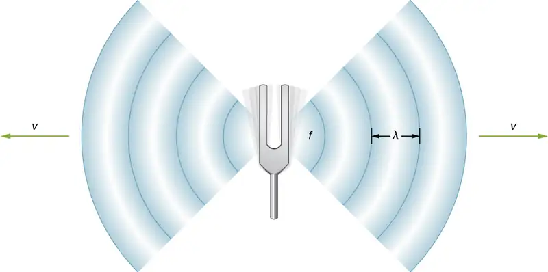
Speed of Sound in Various Media¶
Table 17.1 shows that the speed of sound varies greatly in different media. The speed of sound in a medium depends on how quickly vibrational energy can be transferred through the medium. For this reason, the derivation of the speed of sound in a medium depends on the medium and on the state of the medium. In general, the equation for the speed of a mechanical wave in a medium depends on the square root of the restoring force, or the elastic property, divided by the inertial property,
Also, sound waves satisfy the wave equation derived in Waves,
Recall from Waves that the speed of a wave on a string is equal to \(v=\sqrt{\frac{F_{T}}{\mu}},\) where the restoring force is the tension in the string \(F_{T}\) and the linear density \(\mu\) is the inertial property. In a fluid, the speed of sound depends on the bulk modulus and the density,
equation callout
The speed of sound in a solid depends on the Young’s modulus of the medium and the density,
equation callout
In an ideal gas (see The Kinetic Theory of Gases), the equation for the speed of sound is
equation callout
where \(\gamma\) is the adiabatic index, \(R=8.31\:\text{J/mol}\cdot\text{K}\) is the gas constant, \(T_{\text{K}}\) is the absolute temperature in kelvins, and M is the molar mass. In general, the more rigid (or less compressible) the medium, the faster the speed of sound. This observation is analogous to the fact that the frequency of simple harmonic motion is directly proportional to the stiffness of the oscillating object as measured by k, the spring constant. The greater the density of a medium, the slower the speed of sound. This observation is analogous to the fact that the frequency of a simple harmonic motion is inversely proportional to m, the mass of the oscillating object. The speed of sound in air is low, because air is easily compressible. Because liquids and solids are relatively rigid and very difficult to compress, the speed of sound in such media is generally greater than in gases.
Table 17.1 Speed of Sound in Various Media
| Medium | v (m/s) |
|---|---|
| Gases at\(0{}^{\circ}C\) | |
| Air | 331 |
| Carbon dioxide | 259 |
| Oxygen | 316 |
| Helium | 965 |
| Hydrogen | 1290 |
| Liquids at\(20{}^{\circ}C\) | |
| Ethanol | 1160 |
| Mercury | 1450 |
| Water, fresh | 1480 |
| Sea Water | 1540 |
| Human tissue | 1540 |
| Solids (longitudinal or bulk) | |
| Vulcanized rubber | 54 |
| Polyethylene | 920 |
| Marble | 3810 |
| Glass, Pyrex | 5640 |
| Lead | 1960 |
| Aluminum | 5120 |
| Steel | 5960 |
Because the speed of sound depends on the density of the material, and the density depends on the temperature, there is a relationship between the temperature in a given medium and the speed of sound in the medium. For air at sea level, the speed of sound is given by
equation callout
where the temperature in the first equation (denoted as \(T_{\text{C}}\)) is in degrees Celsius and the temperature in the second equation (denoted as \(T_{\text{K}}\)) is in kelvins. The speed of sound in gases is related to the average speed of particles in the gas, \(v_{\text{rms}}=\sqrt{\frac{3k_{\text{B}}T}{m}},\) where \(k_{\text{B}}\) is the Boltzmann constant \((1.38\:\times\:{10}^{-23}\:\text{J/K})\) and m is the mass of each (identical) particle in the gas. Note that v refers to the speed of the coherent propagation of a disturbance (the wave), whereas \(v_{\text{rms}}\) describes the speeds of particles in random directions. Thus, it is reasonable that the speed of sound in air and other gases should depend on the square root of temperature. While not negligible, this is not a strong dependence. At \(0\text{°C}\), the speed of sound is 331 m/s, whereas at \(20.0\text{°C}\), it is 343 m/s, less than a \(4\text{\%}\) increase. Figure 17.6 shows how a bat uses the speed of sound to sense distances.
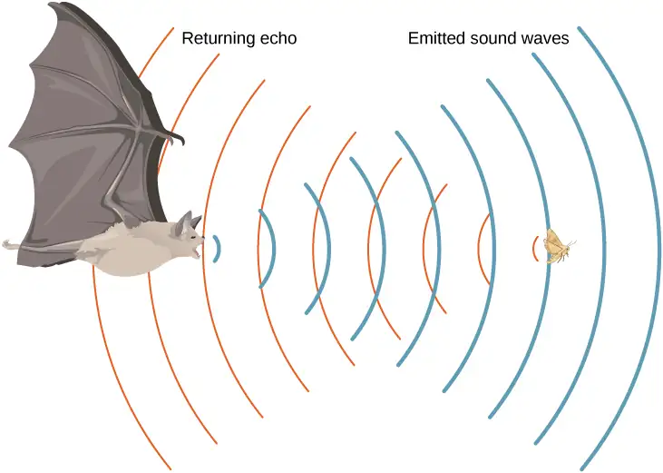
Derivation of the Speed of Sound in Air¶
As stated earlier, the speed of sound in a medium depends on the medium and the state of the medium. The derivation of the equation for the speed of sound in air starts with the mass flow rate and continuity equation discussed in Fluid Mechanics.
Consider fluid flow through a pipe with cross-sectional area A (Figure 17.7). The mass in a small volume of length x of the pipe is equal to the density times the volume, or \(m=\rho V=\rho Ax.\) The mass flow rate is
The continuity equation from Fluid Mechanics states that the mass flow rate into a volume has to equal the mass flow rate out of the volume, \(\rho_{\text{in}}A_{\text{in}}v_{\text{in}}=\rho_{\text{out}}A_{\text{out}}v_{\text{out}}.\)
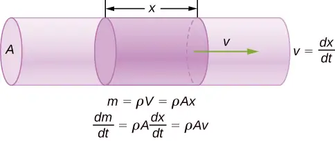
Now consider a sound wave moving through a parcel of air. A parcel of air is a small volume of air with imaginary boundaries (Figure 17.8). The density, temperature, and velocity on one side of the volume of the fluid are given as \(\rho,T,v,\) and on the other side are \(\rho+d\rho,T+dT,v+dv.\)
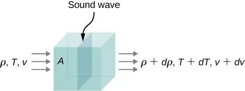
The continuity equation states that the mass flow rate entering the volume is equal to the mass flow rate leaving the volume, so
This equation can be simplified, noting that the area cancels and considering that the multiplication of two infinitesimals is approximately equal to zero: \(d\rho(dv)\approx 0,\)
The net force on the volume of fluid (Figure 17.9) equals the sum of the forces on the left face and the right face:
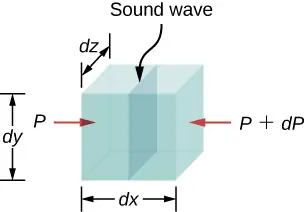
The acceleration is the force divided by the mass and the mass is equal to the density times the volume, \(m=\rho V=\rho\:dx\:dy\:dz.\) We have
From the continuity equation \(\rho\:dv=-vd\rho\), we obtain
Consider a sound wave moving through air. During the process of compression and expansion of the gas, no heat is added or removed from the system. A process where heat is not added or removed from the system is known as an adiabatic system. Adiabatic processes are covered in detail in The First Law of Thermodynamics, but for now it is sufficient to say that for an adiabatic process,\(pV^{\gamma}=\text{constant,}\) where p is the pressure, V is the volume, and gamma \((\gamma)\) is a constant that depends on the gas. For air, \(\gamma=1.40\). The density equals the number of moles times the molar mass divided by the volume, so the volume is equal to \(V=\frac{nM}{\rho}.\) The number of moles and the molar mass are constant and can be absorbed into the constant \(p{\left( \frac{1}{\rho} \right)}^{\gamma}=\text{constant}.\) Taking the natural logarithm of both sides yields \(\ln\:p-\gamma\:\ln\:\rho=\text{constant}.\) Differentiating with respect to the density, the equation becomes
If the air can be considered an ideal gas, we can use the ideal gas law:
Here M is the molar mass of air:
Since the speed of sound is equal to \(v=\sqrt{\frac{dp}{d\rho}}\), the speed is equal to
Note that the velocity is faster at higher temperatures and slower for heavier gases. For air, \(\gamma=1.4,\) \(M=0.02897\frac{\text{kg}}{\text{mol}},\) and \(R=8.31\frac{\text{J}}{\text{mol}\cdot\text{K}}.\) If the temperature is \(T_{\text{C}}=20{}^{\circ}\text{C}(T=293\:\text{K}),\) the speed of sound is \(v=343\:\text{m/s}.\)
The equation for the speed of sound in air \(v=\sqrt{\frac{\gamma RT}{M}}\) can be simplified to give the equation for the speed of sound in air as a function of absolute temperature:
One of the more important properties of sound is that its speed is nearly independent of the frequency. This independence is certainly true in open air for sounds in the audible range. If this independence were not true, you would certainly notice it for music played by a marching band in a football stadium, for example. Suppose that high-frequency sounds traveled faster—then the farther you were from the band, the more the sound from the low-pitch instruments would lag that from the high-pitch ones. But the music from all instruments arrives in cadence independent of distance, so all frequencies must travel at nearly the same speed. Recall that
In a given medium under fixed conditions, v is constant, so there is a relationship between f and \(\lambda;\) the higher the frequency, the smaller the wavelength (Figure 17.10).
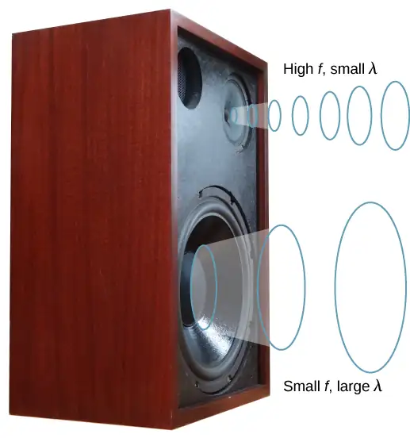
Example 17.1 Calculating Wavelengths
Calculate the wavelengths of sounds at the extremes of the audible range, 20 and 20,000 Hz, in \(30.0\text{°C}\) air. (Assume that the frequency values are accurate to two significant figures.)
Strategy
To find wavelength from frequency, we can use \(v=f\lambda.\)
Solution
-
Identify knowns. The value for v is given by
\[ v=(331\:\text{m/s})\sqrt{\frac{T}{273\:\text{K}}}. \] -
Convert the temperature into kelvins and then enter the temperature into the equation
\[ v=(331\:\text{m/s})\sqrt{\frac{303\:\text{K}}{273\:\text{K}}}=348.7\:\text{m/s}. \] -
Solve the relationship between speed and wavelength for λ:
\[ \lambda=\frac{v}{f}. \] -
Enter the speed and the minimum frequency to give the maximum wavelength:
\[ \lambda_{\max}=\frac{348.7\:\text{m/s}}{20\:\text{Hz}}=17\:\text{m}. \] -
Enter the speed and the maximum frequency to give the minimum wavelength:
\[ \lambda_{\min}=\frac{348.7\:\text{m/s}}{20,000\:\text{Hz}}=0.017\:\text{m}=1.7\:\text{cm}. \]
Significance
Because the product of f multiplied by \(\lambda\) equals a constant, the smaller f is, the larger \(\lambda\) must be, and vice versa.
The speed of sound can change when sound travels from one medium to another, but the frequency usually remains the same. This is similar to the frequency of a wave on a string being equal to the frequency of the force oscillating the string. If v changes and f remains the same, then the wavelength \(\lambda\) must change. That is, because \(v=f\lambda\), the higher the speed of a sound, the greater its wavelength for a given frequency.
Check Your Understanding
Imagine you observe two firework shells explode. You hear the explosion of one as soon as you see it. However, you see the other shell for several milliseconds before you hear the explosion. Explain why this is so.
Answer
Sound and light both travel at definite speeds, and the speed of sound is slower than the speed of light. The first shell is probably very close by, so the speed difference is not noticeable. The second shell is farther away, so the light arrives at your eyes noticeably sooner than the sound wave arrives at your ears.
Although sound waves in a fluid are longitudinal, sound waves in a solid travel both as longitudinal waves and transverse waves. Seismic waves, which are essentially sound waves in Earth’s crust produced by earthquakes, are an interesting example of how the speed of sound depends on the rigidity of the medium. Earthquakes produce both longitudinal and transverse waves, and these travel at different speeds. The bulk modulus of granite is greater than its shear modulus. For that reason, the speed of longitudinal or pressure waves (P-waves) in earthquakes in granite is significantly higher than the speed of transverse or shear waves (S-waves). Both types of earthquake waves travel slower in less rigid material, such as sediments. P-waves have speeds of 4 to 7 km/s, and S-waves range in speed from 2 to 5 km/s, both being faster in more rigid material. The P-wave gets progressively farther ahead of the S-wave as they travel through Earth’s crust. The time between the P- and S-waves is routinely used to determine the distance to their source, the epicenter of the earthquake. Because S-waves do not pass through the liquid core, two shadow regions are produced (Figure 17.11).
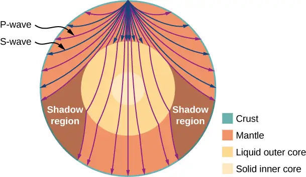
Seismologists and geophysicists use properties and velocities of earthquake waves to study the Earth's interior, which due to it's depth and pressure is not observable through many other means. In fact, the discoveries of the structure of the Earth, illustrated in the figure above, resulted from earthquake observations. In 1914, Beno Gutenberg used differences in wave speeds to determine that there must be a liquid core within the mantle. In 1936, Inge Lehmann began investigating P-waves from a New Zealand earthquake that had unexpectedly reached Europe, which should have been in the shadow region. Up until that point, seismologists had explained such shadow waves as being caused by some type of diffraction (as Gutenberg himself assumed) or a result of faulty seismometers. However, Lehmann had installed the European instruments herself, and so trusted their accuracy. She calculated that the amplitude of the waves must be caused by the existence of a solid inner core within the liquid core. This model has been accepted and reinforced by decades of subsequent calculations, including those from nuclear test explosions, which can be measured very precisely.
As sound waves move away from a speaker, or away from the epicenter of an earthquake, their power per unit area decreases. This is why the sound is very loud near a speaker and becomes less loud as you move away from the speaker. This also explains why there can be an extreme amount of damage at the epicenter of an earthquake but only tremors are felt in areas far from the epicenter. The power per unit area is known as the intensity, and in the next section, we will discuss how the intensity depends on the distance from the source.
17.3 Sound Intensity¶
Learning Objectives
By the end of this section, you will be able to:
- Define the term intensity
- Explain the concept of sound intensity level
- Describe how the human ear translates sound
In a quiet forest, you can sometimes hear a single leaf fall to the ground. But when a passing motorist has their stereo turned up, you cannot even hear what the person next to you in your car is saying (Figure 17.12). We are all very familiar with the loudness of sounds and are aware that loudness is related to how energetically the source is vibrating. High noise exposure is hazardous to hearing, which is why it is important for people working in industrial settings to wear ear protection. The relevant physical quantity is sound intensity, a concept that is valid for all sounds whether or not they are in the audible range.
In Waves, we defined intensity as the power per unit area carried by a wave. Power is the rate at which energy is transferred by the wave. In equation form, intensity I is
where P is the power through an area A. The SI unit for I is \(\text{W/m}^{2}.\) If we assume that the sound wave is spherical, and that no energy is lost to thermal processes, the energy of the sound wave is spread over a larger area as distance increases, so the intensity decreases. The area of a sphere is \(A=4\pi r^{2}.\) As the wave spreads out from \(r_{1}\) to \(r_{2},\) the energy also spreads out over a larger area:
equation callout
The intensity decreases as the wave moves out from the source. In an inverse square relationship, such as the intensity, when you double the distance, the intensity decreases to one quarter,
Generally, when considering the intensity of a sound wave, we take the intensity to be the time-averaged value of the power, denoted by \(〈P〉,\) divided by the area,
equation callout
The intensity of a sound wave is proportional to the change in the pressure squared and inversely proportional to the density and the speed. Consider a parcel of a medium initially undisturbed and then influenced by a sound wave at time t, as shown in Figure 17.13.
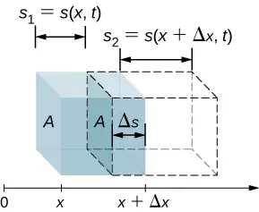
As the sound wave moves through the parcel, the parcel is displaced and may expand or contract. If \(s_{2} \gt s_{1}\), the volume has increased and the pressure decreases. If \(s_{2} \lt s_{1},\) the volume has decreased and the pressure increases. The change in the volume is
The fractional change in the volume is the change in volume divided by the original volume:
The fractional change in volume is related to the pressure fluctuation by the bulk modulus\(\beta=-\frac{\Delta p(x,t)}{dV\text{/}V}.\) Recall that the minus sign is required because the volume is inversely related to the pressure. (We use lowercase p for pressure to distinguish it from power, denoted by P.) The change in pressure is therefore \(\Delta p(x,t)=-\beta\frac{dV}{V}=-\beta\frac{\partial s(x,t)}{\partial x}.\) If the sound wave is sinusoidal, then the displacement as shown in Equation 17.2 is \(s(x,t)=s_{\max}\cos(kx\mp\omega t+\phi)\) and the pressure is found to be
The intensity of the sound wave is the power per unit area, and the power is the force times the velocity, \(I=\frac{P}{A}=\frac{Fv}{A}=pv.\) Here, the velocity is the velocity of the oscillations of the medium, and not the velocity of the sound wave. The velocity of the medium is the time rate of change in the displacement:
Thus, the intensity becomes
To find the time-averaged intensity over one period \(T=\frac{2\pi}{\omega}\) for a position x, we integrate over the period, \(I=\frac{\beta k\omega s_{\max}^{2}}{2}.\) Using \(\Delta p_{\max}=\beta ks_{\max},\) \(v=\sqrt{\frac{\beta}{\rho}},\) and \(v=\frac{\omega}{k},\) we obtain
That is, the intensity of a sound wave is related to its amplitude squared by
equation callout
Here, \(\Delta p_{\max}\) is the pressure variation or pressure amplitude in units of pascals (Pa) or \(\text{N/m}^{2}\). The energy (as kinetic energy \(\frac{1}{2}mv^{2}\)) of an oscillating element of air due to a traveling sound wave is proportional to its amplitude squared. In this equation, \(\rho\) is the density of the material in which the sound wave travels, in units of \(\text{kg/m}^{3},\) and v is the speed of sound in the medium, in units of m/s. The pressure variation is proportional to the amplitude of the oscillation, so I varies as \({(\Delta p)}^{2}.\) This relationship is consistent with the fact that the sound wave is produced by some vibration; the greater its pressure amplitude, the more the air is compressed in the sound it creates.
Human Hearing and Sound Intensity Levels¶
As stated earlier in this chapter, hearing is the perception of sound. The hearing mechanism involves some interesting physics. The sound wave that impinges upon our ear is a pressure wave. The ear is a transducer that converts sound waves into electrical nerve impulses in a manner much more sophisticated than, but analogous to, a microphone. Figure 17.14 shows the anatomy of the ear.
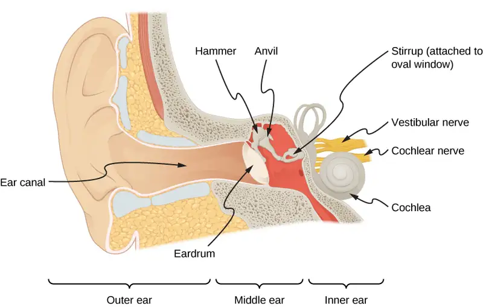
The outer ear, or ear canal, carries sound to the recessed, protected eardrum. The air column in the ear canal resonates and is partially responsible for the sensitivity of the ear to sounds in the 2000–5000-Hz range. The middle ear converts sound into mechanical vibrations and applies these vibrations to the cochlea.
Media
Watch this video for a more detailed discussion of the workings of the human ear.
The range of intensities that the human ear can hear depends on the frequency of the sound, but, in general, the range is quite large. The minimum threshold intensity that can be heard is \(I_{0}={10}^{-12}\:\text{W/m}^{2}.\) Pain is experienced at intensities of \(I_{\text{pain}}=1\:\text{W/m}^{2}.\) Measurements of sound intensity (in units of \(\text{W/m}^{2}\)) are very cumbersome due to this large range in values. For this reason, as well as for other reasons, the concept of sound intensity level was proposed.
The sound intensity level \(\beta\) of a sound, measured in decibels, having an intensity I in watts per meter squared, is defined as
equation callout
where \(I_{0}={10}^{-12}\:\text{W/m}^{2}\) is a reference intensity, corresponding to the threshold intensity of sound that a person with normal hearing can perceive at a frequency of 1.00 kHz. It is more common to consider sound intensity levels in dB than in \(\text{W/m}^{2}.\) How human ears perceive sound can be more accurately described by the logarithm of the intensity rather than directly by the intensity. Because \(\beta\) is defined in terms of a ratio, it is a unitless quantity, telling you the level of the sound relative to a fixed standard (\({10}^{\text{−12}}\:\text{W/m}^{2}\)). The units of decibels (dB) are used to indicate this ratio is multiplied by 10 in its definition. The bel, upon which the decibel is based, is named for Alexander Graham Bell, the inventor of the telephone.
The decibel level of a sound having the threshold intensity of \({10}^{-12}\:\text{W/m}^{2}\) is \(\beta=0\:\text{dB,}\) because \(\log_{10}1\:=\:0.\) Table 17.2 gives levels in decibels and intensities in watts per meter squared for some familiar sounds. The ear is sensitive to as little as a trillionth of a watt per meter squared—even more impressive when you realize that the area of the eardrum is only about \(1\:\text{cm}^{2},\) so that only \({10}^{-16}\:\text{W}\) falls on it at the threshold of hearing. Air molecules in a sound wave of this intensity vibrate over a distance of less than one molecular diameter, and the gauge pressures involved are less than \({10}^{-9}\:\text{atm}.\)
Table 17.2 Sound Intensity Levels and Intensities [1] Several government agencies and health-related professional associations recommend that 85 dB not be exceeded for 8-hour daily exposures in the absence of hearing protection.
| Sound intensity level \(\beta\) (dB) | Intensity I\((\text{W/m}^{2})\) | Example/effect |
|---|---|---|
| 0 | \(1\:\times\:{10}^{-12}\) | Threshold of hearing at 1000 Hz |
| 10 | \(1\:\times\:{10}^{-11}\) | Rustle of leaves |
| 20 | \(1\:\times\:{10}^{-10}\) | Whisper at 1-m distance |
| 30 | \(1\:\times\:{10}^{-9}\) | Quiet home |
| 40 | \(1\:\times\:{10}^{-8}\) | Average home |
| 50 | \(1\:\times\:{10}^{-7}\) | Average office, soft music |
| 60 | \(1\:\times\:{10}^{-6}\) | Normal conversation |
| 70 | \(1\:\times\:{10}^{-5}\) | Noisy office, busy traffic |
| 80 | \(1\:\times\:{10}^{-4}\) | Loud radio, classroom lecture |
| 90 | \(1\:\times\:{10}^{-3}\) | Inside a heavy truck; damage from prolonged exposure1 |
| 100 | \(1\:\times\:{10}^{-2}\) | Noisy factory, siren at 30 m; damage from 8 h per day exposure |
| 110 | \(1\:\times\:{10}^{-1}\) | Damage from 30 min per day exposure |
| 120 | 1 | Loud rock concert; pneumatic chipper at 2 m; threshold of pain |
| 140 | \(1\:\times\:{10}^{2}\) | Jet airplane at 30 m; severe pain, damage in seconds |
| 160 | \(1\:\times\:{10}^{4}\) | Bursting of eardrums |
An observation readily verified by examining Table 17.2 or by using Equation 17.12 is that each factor of 10 in intensity corresponds to 10 dB. For example, a 90-dB sound compared with a 60-dB sound is 30 dB greater, or three factors of 10 (that is, \({10}^{3}\) times) as intense. Another example is that if one sound is \({10}^{7}\) as intense as another, it is 70 dB higher (Table 17.3).
Table 17.3 Ratios of Intensities and Corresponding Differences in Sound Intensity Levels
| \(I_{2}\text{/}I_{1}\) | \(\beta_{2}-\beta_{1}\) |
|---|---|
| 2.0 | 3.0 dB |
| 5.0 | 7.0 dB |
| 10.0 | 10.0 dB |
| 100.0 | 20.0 dB |
| 1000.0 | 30.0 dB |
Example 17.2 Calculating Sound Intensity Levels
Calculate the sound intensity level in decibels for a sound wave traveling in air at \(0\text{°C}\) and having a pressure amplitude of 0.656 Pa.
Strategy
We are given \(\Delta p\), so we can calculate I using the equation \(I=\frac{{(\Delta p)}^{2}}{2\rho v_{\text{w}}}.\) Using I, we can calculate \(\beta\) straight from its definition in \(\beta(dB)=10\:\log_{10}\left( \frac{I}{I_{0}} \right).\)
Solution
-
Identify knowns:
Sound travels at 331 m/s in air at \(0\text{°C}.\)
Air has a density of \(1.29\:\text{kg/m}^{3}\) at atmospheric pressure and \(0\text{°C}.\) -
Enter these values and the pressure amplitude into \(I=\frac{{(\Delta p)}^{2}}{2\rho v}.\)
\[ I=\frac{{(\Delta p)}^{2}}{2\rho v}=\frac{{(0.656\:\text{Pa})}^{2}}{2(1.29\:\text{kg/m}^{3})(331\:\text{m/s})}=5.04\:\times\:{10}^{-4}\:\text{W/m}^{2}. \] -
Enter the value for I and the known value for \(I_{0}\) into \(\beta(\text{dB})=10\:\log_{10}(I\text{/}I_{0}).\) Calculate to find the sound intensity level in decibels:
\[ 10\:\log_{10}(5.04\:\times\:{10}^{8})=10(8.70)\text{dB}=87\:\text{dB}. \]
Significance
This 87-dB sound has an intensity five times as great as an 80-dB sound. So a factor of five in intensity corresponds to a difference of 7 dB in sound intensity level. This value is true for any intensities differing by a factor of five.
Example 17.3 Changing Intensity Levels of a Sound
Show that if one sound is twice as intense as another, it has a sound level about 3 dB higher.
Strategy
We are given that the ratio of two intensities is 2 to 1, and are then asked to find the difference in their sound levels in decibels. We can solve this problem by using of the properties of logarithms.
Solution
-
Identify knowns:
The ratio of the two intensities is 2 to 1, or\[ \frac{I_{2}}{I_{1}}=2.00. \]We wish to show that the difference in sound levels is about 3 dB. That is, we want to show:
\[ \beta_{2}-\beta_{1}=3\:\text{dB.} \]Note that
\[ \log_{10}b-\log_{10}a=\log_{10}\left( \frac{b}{a} \right). \] -
Use the definition of \(\beta\) to obtain
\[ \beta_{2}-\beta_{1}=10\:\log_{10}\left( \frac{I_{2}}{I_{1}} \right)=10\:\log_{10}2.00=10(0.301)\:\text{dB}. \]Thus,
\[ \beta_{2}-\beta_{1}=3.01\:\text{dB}. \]
Significance
This means that the two sound intensity levels differ by 3.01 dB, or about 3 dB, as advertised. Note that because only the ratio \(I_{2}\text{/}I_{1}\) is given (and not the actual intensities), this result is true for any intensities that differ by a factor of two. For example, a 56.0-dB sound is twice as intense as a 53.0-dB sound, a 97.0-dB sound is half as intense as a 100-dB sound, and so on.
Check Your Understanding
Identify common sounds at the levels of 10 dB, 50 dB, and 100 dB.
Answer
10 dB: rustle of leaves; 50 dB: average office; 100 dB: noisy factory
Another decibel scale is also in use, called the sound pressure level, based on the ratio of the pressure amplitude to a reference pressure. This scale is used particularly in applications where sound travels in water. It is beyond the scope of this text to treat this scale because it is not commonly used for sounds in air, but it is important to note that very different decibel levels may be encountered when sound pressure levels are quoted.
Hearing and Pitch¶
The human ear has a tremendous range and sensitivity. It can give us a wealth of simple information—such as pitch, loudness, and direction.
The perception of frequency is called pitch. Typically, humans have excellent relative pitch and can discriminate between two sounds if their frequencies differ by 0.3% or more. For example, 500.0 and 501.5 Hz are noticeably different. Musical notes are sounds of a particular frequency that can be produced by most instruments and in Western music have particular names, such as A-sharp, C, or E-flat.
The perception of intensity is called loudness. At a given frequency, it is possible to discern differences of about 1 dB, and a change of 3 dB is easily noticed. But loudness is not related to intensity alone. Frequency has a major effect on how loud a sound seems. Sounds near the high- and low-frequency extremes of the hearing range seem even less loud, because the ear is less sensitive at those frequencies. When a violin plays middle C, there is no mistaking it for a piano playing the same note. The reason is that each instrument produces a distinctive set of frequencies and intensities. We call our perception of these combinations of frequencies and intensities tone quality or, more commonly, the timbre of the sound. Timbre is the shape of the wave that arises from the many reflections, resonances, and superposition in an instrument.
A unit called a phon is used to express loudness numerically. Phons differ from decibels because the phon is a unit of loudness perception, whereas the decibel is a unit of physical intensity. Figure 17.15 shows the relationship of loudness to intensity (or intensity level) and frequency for persons with normal hearing. The curved lines are equal-loudness curves. Each curve is labeled with its loudness in phons. Any sound along a given curve is perceived as equally loud by the average person. The curves were determined by having large numbers of people compare the loudness of sounds at different frequencies and sound intensity levels. At a frequency of 1000 Hz, phons are taken to be numerically equal to decibels.
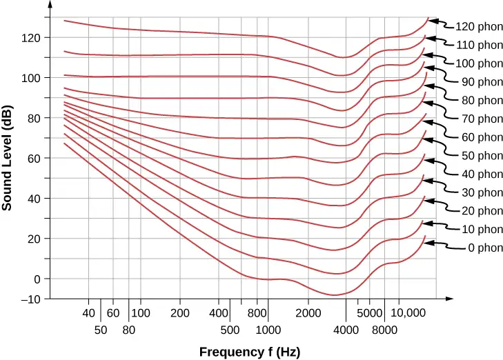
Example 17.4 Measuring Loudness
(a) What is the loudness in phons of a 100-Hz sound that has an intensity level of 80 dB? (b) What is the intensity level in decibels of a 4000-Hz sound having a loudness of 70 phons? (c) At what intensity level will an 8000-Hz sound have the same loudness as a 200-Hz sound at 60 dB?
Strategy
The graph in Figure 17.15 should be referenced to solve this example. To find the loudness of a given sound, you must know its frequency and intensity level, locate that point on the square grid, and then interpolate between loudness curves to get the loudness in phons. Once that point is located, the intensity level can be determined from the vertical axis.
Solution
- Identify knowns: The square grid of the graph relating phons and decibels is a plot of intensity level versus frequency—both physical quantities: 100 Hz at 80 dB lies halfway between the curves marked 70 and 80 phons.
Find the loudness: 75 phons. - Identify knowns: Values are given to be 4000 Hz at 70 phons.
Follow the 70-phon curve until it reaches 4000 Hz. At that point, it is below the 70 dB line at about 67 dB.
Find the intensity level: 67 dB. - Locate the point for a 200 Hz and 60 dB sound.
Find the loudness: This point lies just slightly above the 50-phon curve, and so its loudness is 51 phons.
Look for the 51-phon level is at 8000 Hz: 63 dB.
Significance
These answers, like all information extracted from Figure 17.15, have uncertainties of several phons or several decibels, partly due to difficulties in interpolation, but mostly related to uncertainties in the equal-loudness curves.
Check Your Understanding
Describe how amplitude is related to the loudness of a sound.
Answer
Amplitude is directly proportional to the experience of loudness. As amplitude increases, loudness increases.
In this section, we discussed the characteristics of sound and how we hear, but how are the sounds we hear produced? Interesting sources of sound are musical instruments and the human voice, and we will discuss these sources. But before we can understand how musical instruments produce sound, we need to look at the basic mechanisms behind these instruments. The theories behind the mechanisms used by musical instruments involve interference, superposition, and standing waves, which we discuss in the next section.
17.4 Normal Modes of a Standing Sound Wave¶
Learning Objectives
By the end of this section, you will be able to:
- Explain the mechanism behind sound-reducing headphones
- Describe resonance in a tube closed at one end and open at the other end
- Describe resonance in a tube open at both ends
Interference is the hallmark of waves, all of which exhibit constructive and destructive interference exactly analogous to that seen for water waves. In fact, one way to prove something “is a wave” is to observe interference effects. Since sound is a wave, we expect it to exhibit interference.
Interference of Sound Waves¶
In Waves, we discussed the interference of wave functions that differ only in a phase shift. We found that the wave function resulting from the superposition of \(y_{1}(x,t)=A\:\sin(kx-\omega t+\phi)\) and \(y_{2}(x,t)=A\:\sin(kx-\omega t)\) is
One way for two identical waves that are initially in phase to become out of phase with one another is to have the waves travel different distances; that is, they have different path lengths. Sound waves provide an excellent example of a phase shift due to a path difference. As we have discussed, sound waves can basically be modeled as longitudinal waves, where the molecules of the medium oscillate around an equilibrium position, or as pressure waves.
When the waves leave the speakers, they move out as spherical waves (Figure 17.16). The waves interfere; constructive inference is produced by the combination of two crests or two troughs, as shown. Destructive interference is produced by the combination of a trough and a crest.
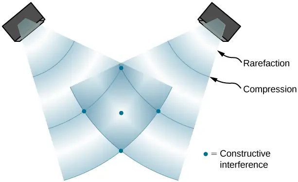

The phase difference at each point is due to the different path lengths traveled by each wave. When the difference in the path lengths is an integer multiple of a wavelength,
the waves are in phase and there is constructive interference. When the difference in path lengths is an odd multiple of a half wavelength,
the waves are \(180{}^{\circ}(\pi\:\text{rad})\) out of phase and the result is destructive interference. These points can be located with a sound-level intensity meter.
Example 17.5 Interference of Sound Waves
Two speakers are separated by 5.00 m and are being driven by a signal generator at an unknown frequency. A student with a sound-level meter walks out 6.00 m and down 2.00 m, and finds the first minimum intensity, as shown below. What is the frequency supplied by the signal generator? Assume the wave speed of sound is \(v=343.00\:\text{m/s}.\)
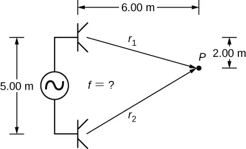
Strategy
The wave velocity is equal to \(v=\frac{\lambda}{T}=\lambda f.\) The frequency is then \(f=\frac{v}{\lambda}.\) A minimum intensity indicates destructive interference and the first such point occurs where there is path difference of \(\Delta r=\lambda\text{/}2,\) which can be found from the geometry.
Solution
-
Find the path length to the minimum point from each speaker.
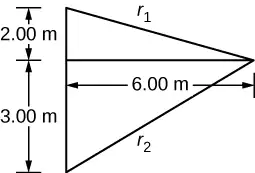
\[ r_{1}=\sqrt{{(6.00\:\text{m})}^{2}+{(2.00\:\text{m})}^{2}}=6.32\:\text{m,}\;r_{2}=\sqrt{{(6.00\:\text{m})}^{2}+{(3.00\:\text{m})}^{2}}=6.71\:\text{m} \] -
Use the difference in the path length to find the wavelength.
\[ \Delta r=|r_{2}-r_{1}|=|6.71\:\text{m}-6.32\:\text{m}|=0.39\:\text{m} \]\[ \lambda=2\Delta r=2(0.39\:\text{m})=0.78\:\text{m} \] -
Find the frequency.
\[ f=\frac{v}{\lambda}=\frac{343.00\:\text{m/s}}{0.78\:\text{m}}=439.74\:\text{Hz} \]
Significance
If point P were a point of maximum intensity, then the path length would be an integer multiple of the wavelength.
Check Your Understanding
If you walk around two speakers playing music, how come you do not notice places where the music is very loud or very soft, that is, where there is constructive and destructive interference?
Answer
In the example, the two speakers were producing sound at a single frequency. Music has various frequencies and wavelengths.
The concept of a phase shift due to a difference in path length is very important. You will use this concept again in Interference and Photons and Matter Waves, where we discuss how Thomas Young used this method in his famous double-slit experiment to provide evidence that light has wavelike properties.
Noise Reduction through Destructive Interference¶
Figure 17.18 shows a clever use of sound interference to cancel noise. Larger-scale applications of active noise reduction by destructive interference have been proposed for entire passenger compartments in commercial aircraft. To obtain destructive interference, a fast electronic analysis is performed, and a second sound is introduced \(180{}^{\circ}\) out of phase with the original sound, with its maxima and minima exactly reversed from the incoming noise. Sound waves in fluids are pressure waves and are consistent with Pascal’s principle; that is, pressures from two different sources add and subtract like simple numbers. Therefore, positive and negative gauge pressures add to a much smaller pressure, producing a lower-intensity sound. Although completely destructive interference is possible only under the simplest conditions, it is possible to reduce noise levels by 30 dB or more using this technique.
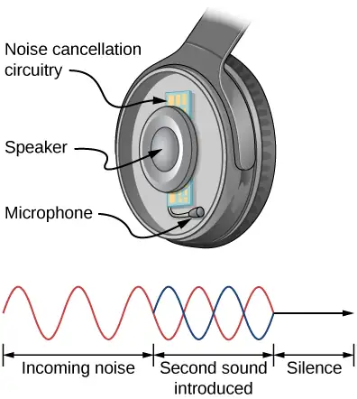
Check Your Understanding
Describe how noise-canceling headphones differ from standard headphones used to block outside sounds.
Answer
Regular headphones only block sound waves with a physical barrier. Noise-canceling headphones use destructive interference to reduce the loudness of outside sounds.
Where else can we observe sound interference? All sound resonances, such as in musical instruments, are due to constructive and destructive interference. Only the resonant frequencies interfere constructively to form standing waves, whereas others interfere destructively and are absent.
Resonance in a Tube Closed at one End¶
As we discussed in Waves, standing waves are formed by two waves moving in opposite directions. When two identical sinusoidal waves move in opposite directions, the waves may be modeled as
When these two waves interfere, the resultant wave is a standing wave:
Resonance can be produced due to the boundary conditions imposed on a wave. In Waves, we showed that resonance could be produced in a string under tension that had symmetrical boundary conditions, specifically, a node at each end. We defined a node as a fixed point where the string did not move. We found that the symmetrical boundary conditions resulted in some frequencies resonating and producing standing waves, also called normal modes, while other frequencies interfere destructively. Sound waves can resonate in a hollow tube, and the frequencies of the sound waves that resonate depend on the boundary conditions.
Suppose we have a tube that is closed at one end and open at the other. If we hold a vibrating tuning fork near the open end of the tube, an incident sound wave travels through the tube and reflects off the closed end. The reflected sound has the same frequency and wavelength as the incident sound wave, but is traveling in the opposite direction. At the closed end of the tube, the molecules of air have very little freedom to oscillate, and a node arises. At the open end, the molecules are free to move, and at the right frequency, an antinode occurs. Unlike the symmetrical boundary conditions for the standing waves on the string, the boundary conditions for a tube open at one end and closed at the other end are anti-symmetrical: a node at the closed end and an antinode at the open end.
If the tuning fork has just the right frequency, the air column in the tube resonates loudly, but at most frequencies it vibrates very little. This observation just means that the air column has only certain natural frequencies. Consider the lowest frequency that will cause the tube to resonate, producing a loud sound. There will be a node at the closed end and an antinode at the open end, as shown in Figure 17.19.
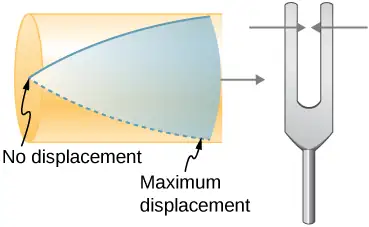
The standing wave formed in the tube has an antinode at the open end and a node at the closed end. The distance from a node to an antinode is one-fourth of a wavelength, and this equals the length of the tube; thus, \(\lambda_{1}=4L.\) This same resonance can be produced by a vibration introduced at or near the closed end of the tube (Figure 17.20). It is best to consider this a natural vibration of the air column, independently of how it is induced.
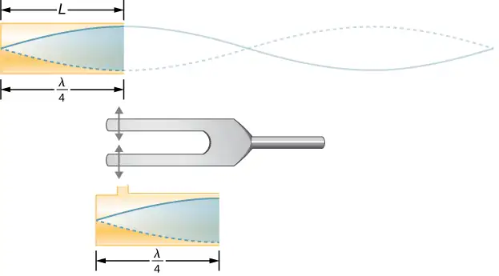
Given that maximum air displacements are possible at the open end and none at the closed end, other shorter wavelengths can resonate in the tube, such as the one shown in Figure 17.21. Here the standing wave has three-fourths of its wavelength in the tube, or \(\frac{3}{4}\lambda_{3}=L,\) so that \(\lambda_{3}=\frac{4}{3}L.\) Continuing this process reveals a whole series of shorter-wavelength and higher-frequency sounds that resonate in the tube. We use specific terms for the resonances in any system. The lowest resonant frequency is called the fundamental, while all higher resonant frequencies are called overtones. The resonant frequencies that are integral multiples of the fundamental are collectively called harmonics. The fundamental is the first harmonic, the second harmonic is twice the frequency of the first harmonic, and so on. Some of these harmonics may not exist for a given scenario. Figure 17.22 shows the fundamental and the first three overtones (or the first, third, fifth, and seventh harmonics) in a tube closed at one end.
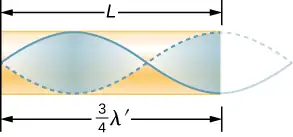
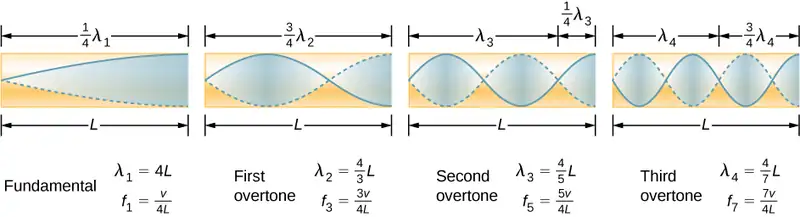
The relationship for the resonant wavelengths of a tube closed at one end is
equation callout
Now let us look for a pattern in the resonant frequencies for a simple tube that is closed at one end. The fundamental has \(\lambda=4L,\) and frequency is related to wavelength and the speed of sound as given by
\(v=f\lambda.\)
Solving for f in this equation gives
where v is the speed of sound in air. Similarly, the first overtone has \(\lambda=4L\text{/}3\) (see Figure 17.22), so that
Because \(f_{3}=3f_{1},\) we call the first overtone the third harmonic. Continuing this process, we see a pattern that can be generalized in a single expression. The resonant frequencies of a tube closed at one end are
equation callout
where \(f_{1}\) is the fundamental, \(f_{3}\) is the first overtone, and so on. It is interesting that the resonant frequencies depend on the speed of sound and, hence, on temperature. This dependence poses a noticeable problem for organs in old unheated cathedrals, and it is also the reason why musicians commonly bring their wind instruments to room temperature before playing them.
Resonance in a Tube Open at Both Ends¶
Another source of standing waves is a tube that is open at both ends. In this case, the boundary conditions are symmetrical: an antinode at each end. The resonances of tubes open at both ends can be analyzed in a very similar fashion to those for tubes closed at one end. The air columns in tubes open at both ends have maximum air displacements at both ends (Figure 17.23). Standing waves form as shown.
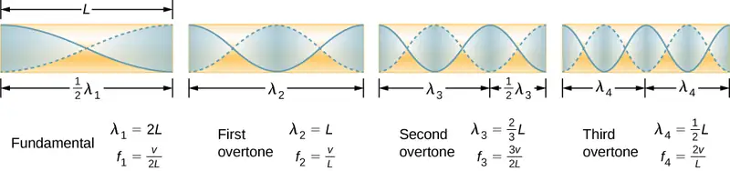
The relationship for the resonant wavelengths of a tube open at both ends is
equation callout
Based on the fact that a tube open at both ends has maximum air displacements at both ends, and using Figure 17.23 as a guide, we can see that the resonant frequencies of a tube open at both ends are
equation callout
where \(f_{1}\) is the fundamental, \(f_{2}\) is the first overtone, \(f_{3}\) is the second overtone, and so on. Note that a tube open at both ends has a fundamental frequency twice what it would have if closed at one end. It also has a different spectrum of overtones than a tube closed at one end.
Note that a tube open at both ends has symmetrical boundary conditions, similar to the string fixed at both ends discussed in Waves. The relationships for the wavelengths and frequencies of a stringed instrument are the same as given in Equation 17.15 and Equation 17.16. The speed of the wave on the string (from Waves) is \(v=\sqrt{\frac{F_{T}}{\mu}}.\) The air around the string vibrates at the same frequency as the string, producing sound of the same frequency. The sound wave moves at the speed of sound and the wavelength can be found using \(v=\lambda f.\)
Check Your Understanding
How is it possible to use a standing wave’s node and antinode to determine the length of a closed-end tube?
Answer
When the tube resonates at its natural frequency, the wave’s node is located at the closed end of the tube, and the antinode is located at the open end. The length of the tube is equal to one-fourth of the wavelength of this wave. Thus, if we know the wavelength of the wave, we can determine the length of the tube.
Media
This video lets you visualize sound waves.
Check Your Understanding
You observe two musical instruments that you cannot identify. One plays high-pitched sounds and the other plays low-pitched sounds. How could you determine which is which without hearing either of them play?
Answer
Compare their sizes. High-pitch instruments are generally smaller than low-pitch instruments because they generate a smaller wavelength.
17.5 Sources of Musical Sound¶
Learning Objectives
By the end of this section, you will be able to:
- Describe the resonant frequencies in instruments that can be modeled as a tube with symmetrical boundary conditions
- Describe the resonant frequencies in instruments that can be modeled as a tube with anti-symmetrical boundary conditions
Some musical instruments, such as woodwinds, brass, and pipe organs, can be modeled as tubes with symmetrical boundary conditions, that is, either open at both ends or closed at both ends (Figure 17.24). Other instruments can be modeled as tubes with anti-symmetrical boundary conditions, such as a tube with one end open and the other end closed (Figure 17.25).
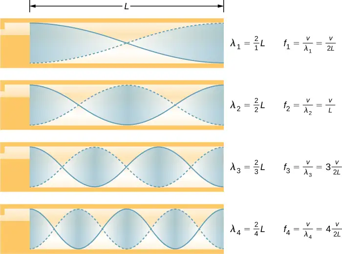
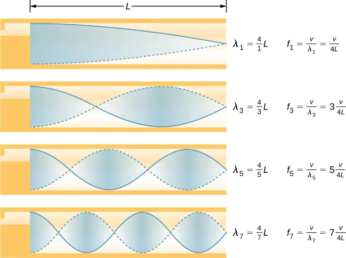
Resonant frequencies are produced by longitudinal waves that travel down the tubes and interfere with the reflected waves traveling in the opposite direction. A pipe organ is manufactured with various tubes of fixed lengths to produce different frequencies. The waves are the result of compressed air allowed to expand in the tubes. Even in open tubes, some reflection occurs due to the constraints of the sides of the tubes and the atmospheric pressure outside the open tube.
The antinodes do not occur at the opening of the tube, but rather depend on the radius of the tube. The waves do not fully expand until they are outside the open end of a tube, and for a thin-walled tube, an end correction should be added. This end correction is approximately 0.6 times the radius of the tube and should be added to the length of the tube.
Players of instruments such as the flute or oboe vary the length of the tube by opening and closing finger holes. On a trombone, you change the tube length by using a sliding tube. Bugles have a fixed length and can produce only a limited range of frequencies.
The fundamental and overtones can be present simultaneously in a variety of combinations. For example, middle C on a trumpet sounds distinctively different from middle C on a clarinet, although both instruments are modified versions of a tube closed at one end. The fundamental frequency is the same (and usually the most intense), but the overtones and their mix of intensities are different and subject to shading by the musician. This mix is what gives various musical instruments (and human voices) their distinctive characteristics, whether they have air columns, strings, sounding boxes, or drumheads. In fact, much of our speech is determined by shaping the cavity formed by the throat and mouth, and positioning the tongue to adjust the fundamental and combination of overtones. For example, simple resonant cavities can be made to resonate with the sound of the vowels (Figure 17.26). In boys at puberty, the larynx grows and the shape of the resonant cavity changes, giving rise to the difference in predominant frequencies in speech between men and women.
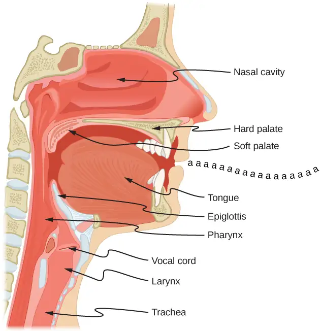
Example 17.6 Finding the Length of a Tube with a 128-Hz Fundamental
(a) What length should a tube closed at one end have on a day when the air temperature is
\(22.0\text{°C}\) if its fundamental frequency is to be 128 Hz (C below middle C)?
(b) What is the frequency of its fourth overtone?
Strategy
The length L can be found from the relationship \(f_{n}=n\frac{v}{4L}\), but we first need to find the speed of sound v.
Solution
a. Identify knowns: The fundamental frequency is 128 Hz, and the air temperature is \(22.0\text{°C}\).
Use \(f_{n}=n\frac{v}{4L}\) to find the fundamental frequency (\(n=1\)),
Solve this equation for length,
Find the speed of sound using \(v=(331\:\text{m/s})\sqrt{\frac{T}{273\:\text{K}}}\),
Enter the values of the speed of sound and frequency into the expression for L.
b. Identify knowns: The first overtone has \(n=3\), the second overtone has \(n=5\), the third overtone has \(n=7\), and the fourth overtone has \(n=9\).
Enter the value for the fourth overtone into \(f_{n}=n\frac{v}{4L},\)
Significance
Many wind instruments are modified tubes that have finger holes, valves, and other devices for changing the length of the resonating air column and hence, the frequency of the note played. Horns producing very low frequencies require tubes so long that they are coiled into loops. An example is the tuba. Whether an overtone occurs in a simple tube or a musical instrument depends on how it is stimulated to vibrate and the details of its shape. The trombone, for example, does not produce its fundamental frequency and only makes overtones.
If you have two tubes with the same fundamental frequency, but one is open at both ends and the other is closed at one end, they would sound different when played because they have different overtones. Middle C, for example, would sound richer played on an open tube, because it has even multiples of the fundamental as well as odd. A closed tube has only odd multiples.
Resonance¶
Resonance occurs in many different systems, including strings, air columns, and atoms. As we discussed in earlier chapters, resonance is the driven or forced oscillation of a system at its natural frequency. At resonance, energy is transferred rapidly to the oscillating system, and the amplitude of its oscillations grows until the system can no longer be described by Hooke’s law. An example of this is the distorted sound intentionally produced in certain types of rock music.
Wind instruments use resonance in air columns to amplify tones made by lips or vibrating reeds. Other instruments also use air resonance in clever ways to amplify sound. Figure 17.27 shows a violin and a guitar, both of which have sounding boxes but with different shapes, resulting in different overtone structures. The vibrating string creates a sound that resonates in the sounding box, greatly amplifying the sound and creating overtones that give the instrument its characteristic timbre. The more complex the shape of the sounding box, the greater its ability to resonate over a wide range of frequencies. The marimba, like the one shown in Figure 17.28, uses pots or gourds below the wooden slats to amplify their tones. The resonance of the pot can be adjusted by adding water.
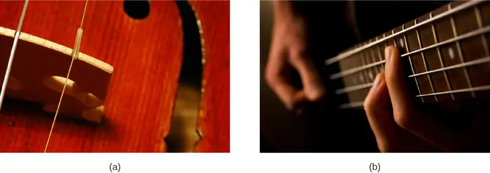
We have emphasized sound applications in our discussions of resonance and standing waves, but these ideas apply to any system that has wave characteristics. Vibrating strings, for example, are actually resonating and have fundamentals and overtones similar to those for air columns. More subtle are the resonances in atoms due to the wave character of their electrons. Their orbitals can be viewed as standing waves, which have a fundamental (ground state) and overtones (excited states). It is fascinating that wave characteristics apply to such a wide range of physical systems.
17.6 Beats¶
Learning Objectives
By the end of this section, you will be able to:
- Determine the beat frequency produced by two sound waves that differ in frequency
- Describe how beats are produced by musical instruments
The study of music provides many examples of the superposition of waves and the constructive and destructive interference that occurs. Very few examples of music being performed consist of a single source playing a single frequency for an extended period of time. You will probably agree that a single frequency of sound for an extended period might be boring to the point of irritation, similar to the unwanted drone of an aircraft engine or a loud fan. Music is pleasant and interesting due to mixing the changing frequencies of various instruments and voices.
An interesting phenomenon that occurs due to the constructive and destructive interference of two or more frequencies of sound is the phenomenon of beats. If two sounds differ in frequencies, the sound waves can be modeled as
Using the trigonometric identity \(\cos\:u+\cos\:v=2\:\cos\left( \frac{u+v}{2} \right)\cos\left( \frac{u-v}{2} \right)\) and considering the point in space as \(x=0.0\:\text{m,}\) we find the resulting sound at a point in space, from the superposition of the two sound waves, is equal to Figure 17.29:
where the beat frequency is
equation callout
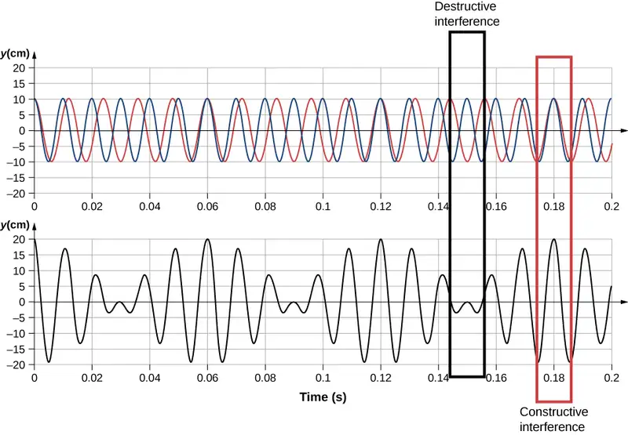
These beats can be used by piano tuners to tune a piano. A tuning fork is struck and a note is played on the piano. As the piano tuner tunes the string, the beats have a lower frequency as the frequency of the note played approaches the frequency of the tuning fork.
Example 17.7 Find the Beat Frequency Between Two Tuning Forks
What is the beat frequency produced when a tuning fork of a frequency of 256 Hz and a tuning fork of a frequency of 512 Hz are struck simultaneously?
Strategy
The beat frequency is the difference of the two frequencies.
Solution
We use \(f_{\text{beat}}=|f_{2}-f_{1}|:\)
Significance
The beat frequency is the absolute value of the difference between the two frequencies. A negative frequency would not make sense.
Check Your Understanding
What would happen if more than two frequencies interacted? Consider three frequencies.
Answer
An easy way to understand this event is to use a graph, as shown below. It appears that beats are produced, but with a more complex pattern of interference.
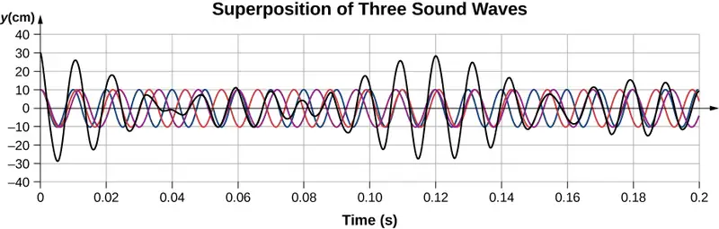
The study of the superposition of various waves has many interesting applications beyond the study of sound. In later chapters, we will discuss the wave properties of particles. The particles can be modeled as a “wave packet” that results from the superposition of various waves, where the particle moves at the “group velocity” of the wave packet.
17.7 The Doppler Effect¶
Learning Objectives
By the end of this section, you will be able to:
- Explain the change in observed frequency as a moving source of sound approaches or departs from a stationary observer
- Explain the change in observed frequency as an observer moves toward or away from a stationary source of sound
The characteristic sound of a motorcycle buzzing by is an example of the Doppler effect. Specifically, if you are standing on a street corner and observe an ambulance with a siren sounding passing at a constant speed, you notice two characteristic changes in the sound of the siren. First, the sound increases in loudness as the ambulance approaches and decreases in loudness as it moves away, which is expected. But in addition, the high-pitched siren shifts dramatically to a lower-pitched sound. As the ambulance passes, the frequency of the sound heard by a stationary observer changes from a constant high frequency to a constant lower frequency, even though the siren is producing a constant source frequency. The closer the ambulance brushes by, the more abrupt the shift. Also, the faster the ambulance moves, the greater the shift. We also hear this characteristic shift in frequency for passing cars, airplanes, and trains.
The Doppler effect is an alteration in the observed frequency of a sound due to motion of either the source or the observer. Although less familiar, this effect is easily noticed for a stationary source and moving observer. For example, if you ride a train past a stationary warning horn, you will hear the horn’s frequency shift from high to low as you pass by. The actual change in frequency due to relative motion of source and observer is called a Doppler shift. The Doppler effect and Doppler shift are named for the Austrian physicist and mathematician Christian Johann Doppler (1803–1853), who did experiments with both moving sources and moving observers. Doppler, for example, had musicians play on a moving open train car and also play standing next to the train tracks as a train passed by. Their music was observed both on and off the train, and changes in frequency were measured.
What causes the Doppler shift? Figure 17.30 illustrates sound waves emitted by stationary and moving sources in a stationary air mass. Each disturbance spreads out spherically from the point at which the sound is emitted. If the source is stationary, then all of the spheres representing the air compressions in the sound wave are centered on the same point, and the stationary observers on either side hear the same wavelength and frequency as emitted by the source (case a). If the source is moving, the situation is different. Each compression of the air moves out in a sphere from the point at which it was emitted, but the point of emission moves. This moving emission point causes the air compressions to be closer together on one side and farther apart on the other. Thus, the wavelength is shorter in the direction the source is moving (on the right in case b), and longer in the opposite direction (on the left in case b). Finally, if the observers move, as in case (c), the frequency at which they receive the compressions changes. The observer moving toward the source receives them at a higher frequency, and the person moving away from the source receives them at a lower frequency.
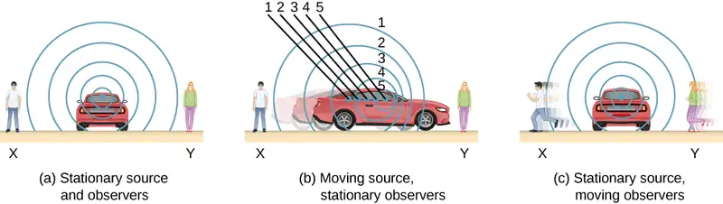
We know that wavelength and frequency are related by \(v=f\lambda,\) where v is the fixed speed of sound. The sound moves in a medium and has the same speed v in that medium whether the source is moving or not. Thus, f multiplied by \(\lambda\) is a constant. Because the observer on the right in case (b) receives a shorter wavelength, the frequency she receives must be higher. Similarly, the observer on the left receives a longer wavelength, and hence he hears a lower frequency. The same thing happens in case (c). A higher frequency is received by the observer moving toward the source, and a lower frequency is received by an observer moving away from the source. In general, then, relative motion of source and observer toward one another increases the received frequency. Relative motion apart decreases frequency. The greater the relative speed, the greater the effect.
The Doppler effect occurs not only for sound, but for any wave when there is relative motion between the observer and the source. Doppler shifts occur in the frequency of sound, light, and water waves, for example. Doppler shifts can be used to determine velocity, such as when ultrasound is reflected from blood in a medical diagnostic. The relative velocities of stars and galaxies is determined by the shift in the frequencies of light received from them and has implied much about the origins of the universe. Modern physics has been profoundly affected by observations of Doppler shifts.
Derivation of the Observed Frequency due to the Doppler Shift¶
Consider two stationary observers X and Y in Figure 17.31, located on either side of a stationary source. Each observer hears the same frequency, and that frequency is the frequency produced by the stationary source.
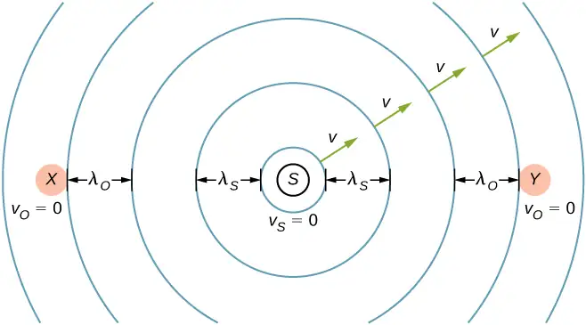
Now consider a stationary observer X with a source moving away from the observer with a constant speed \(v_{\text{s}} \lt v\) (Figure 17.32). At time \(t=0\), the source sends out a sound wave, indicated in black. This wave moves out at the speed of sound v. The position of the sound wave at each time interval of period \(T_{\text{s}}\) is shown as dotted lines. After one period, the source has moved \(\Delta x=v_{\text{s}}T_{\text{s}}\) and emits a second sound wave, which moves out at the speed of sound. The source continues to move and produce sound waves, as indicated by the circles numbered 3 and 4. Notice that as the waves move out, they remained centered at their respective point of origin.
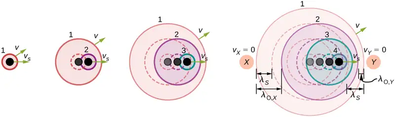
Using the fact that the wavelength is equal to the speed times the period, and the period is the inverse of the frequency, we can derive the observed frequency:
As the source moves away from the observer, the observed frequency is lower than the source frequency.
Now consider a source moving at a constant velocity \(v_{s},\) moving toward a stationary observer Y, also shown in Figure 17.32. The wavelength is observed by Y as \(\lambda_{\text{o}}=\lambda_{\text{s}}-\Delta x=\lambda_{\text{s}}-v_{\text{s}}T_{\text{s}}.\) Once again, using the fact that the wavelength is equal to the speed times the period, and the period is the inverse of the frequency, we can derive the observed frequency:
When a source is moving and the observer is stationary, the observed frequency is
equation callout
where \(f_{\text{o}}\) is the frequency observed by the stationary observer, \(f_{\text{s}}\) is the frequency produced by the moving source, v is the speed of sound, \(v_{\text{s}}\) is the constant speed of the source, and the top sign is for the source approaching the observer and the bottom sign is for the source departing from the observer.
What happens if the observer is moving and the source is stationary? If the observer moves toward the stationary source, the observed frequency is higher than the source frequency. If the observer is moving away from the stationary source, the observed frequency is lower than the source frequency. Consider observer X in Figure 17.33 as the observer moves toward a stationary source with a speed \(v_{\text{o}}\). The source emits a tone with a constant frequency \(f_{\text{s}}\) and constant period \(T_{\text{s}}.\) The observer hears the first wave emitted by the source. If the observer were stationary, the time for one wavelength of sound to pass should be equal to the period of the source \(T_{\text{s}}.\) Since the observer is moving toward the source, the time for one wavelength to pass is less than \(T_{\text{s}}\) and is equal to the observed period \(T_{\text{o}}=T_{\text{s}}-\Delta t.\) At time \(t=0,\) the observer starts at the beginning of a wavelength and moves toward the second wavelength as the wavelength moves out from the source. The wavelength is equal to the distance the observer traveled plus the distance the sound wave traveled until it is met by the observer:
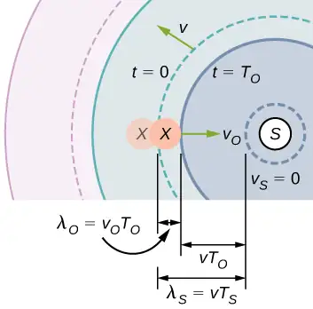
If the observer is moving away from the source (Figure 17.34), the observed frequency can be found:
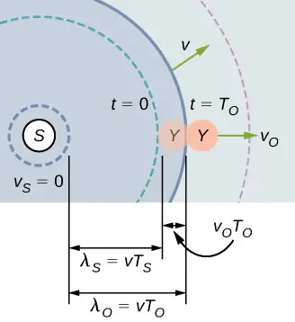
The equations for an observer moving toward or away from a stationary source can be combined into one equation:
equation callout
where \(f_{\text{o}}\) is the observed frequency, \(f_{\text{s}}\) is the source frequency, \(v\) is the speed of sound, \(v_{\text{o}}\) is the speed of the observer, the top sign is for the observer approaching the source and the bottom sign is for the observer departing from the source.
Equation 17.18 and Equation 17.19 can be summarized in one equation (the top sign is for approaching) and is further illustrated in Table 17.4:
equation callout
Table 17.4
| Doppler shift \(f_{\text{o}}=f_{\text{s}}\left( \frac{v\pm v_{\text{o}}}{v\mp v_{\text{s}}} \right)\) |
Stationary observer | Observer moving towards source | Observer moving away from source |
|---|---|---|---|
| Stationary source | \(f_{\text{o}}=f_{\text{s}}\) | \(f_{\text{o}}=f_{\text{s}}\left( \frac{v+v_{\text{o}}}{v} \right)\) | \(f_{\text{o}}=f_{\text{s}}\left( \frac{v-v_{\text{o}}}{v} \right)\) |
| Source moving towards observer | \(f_{\text{o}}=f_{\text{s}}\left( \frac{v}{v-v_{\text{s}}} \right)\) | \(f_{\text{o}}=f_{\text{s}}\left( \frac{v+v_{\text{o}}}{v-v_{\text{s}}} \right)\) | \(f_{\text{o}}=f_{\text{s}}\left( \frac{v-v_{\text{o}}}{v-v_{\text{s}}} \right)\) |
| Source moving away from observer | \(f_{\text{o}}=f_{\text{s}}\left( \frac{v}{v+v_{\text{s}}} \right)\) | \(f_{\text{o}}=f_{\text{s}}\left( \frac{v+v_{\text{o}}}{v+v_{\text{s}}} \right)\) | \(f_{\text{o}}=f_{\text{s}}\left( \frac{v-v_{\text{o}}}{v+v_{\text{s}}} \right)\) |
where \(f_{o}\) is the observed frequency, \(f_{s}\) is the source frequency, \(v\) is the speed of sound, \(v_{o}\) is the speed of the observer, \(v_{s}\) is the speed of the source, the top sign is for approaching and the bottom sign is for departing.
Media
The Doppler effect involves motion and a video will help visualize the effects of a moving observer or source. This video shows a moving source and a stationary observer, and a moving observer and a stationary source. It also discusses the Doppler effect and its application to light.
Example 17.8 Calculating a Doppler Shift
Suppose a train that has a 150-Hz horn is moving at 35.0 m/s in still air on a day when the speed of sound is 340 m/s.
(a) What frequencies are observed by a stationary person at the side of the tracks as the train approaches and after it passes?
(b) What frequency is observed by the train’s engineer traveling on the train?
Strategy
To find the observed frequency in (a), we must use \(f_{\text{obs}}=f_{\text{s}}\left( \frac{v}{v\mp v_{\text{s}}} \right)\) because the source is moving. The minus sign is used for the approaching train, and the plus sign for the receding train. In (b), there are two Doppler shifts—one for a moving source and the other for a moving observer.
Solution
a. Enter known values into \(f_{\text{o}}=f_{\text{s}}\left( \frac{v}{v-v_{\text{s}}} \right):\)
Calculate the frequency observed by a stationary person as the train approaches:
Use the same equation with the plus sign to find the frequency heard by a stationary person as the train recedes:
Calculate the second frequency:
b. Identify knowns:
- It seems reasonable that the engineer would receive the same frequency as emitted by the horn, because the relative velocity between them is zero.
- Relative to the medium (air), the speeds are \(v_{\text{s}}=v_{\text{o}}=35.0\:\text{m/s}.\)
- The first Doppler shift is for the moving observer; the second is for the moving source.
Use the following equation:
The quantity in the square brackets is the Doppler-shifted frequency due to a moving observer. The factor on the right is the effect of the moving source.
Because the train engineer is moving in the direction toward the horn, we must use the plus sign for \(v_{\text{obs}};\) however, because the horn is also moving in the direction away from the engineer, we also use the plus sign for \(v_{\text{s}}.\) But the train is carrying both the engineer and the horn at the same velocity, so \(v_{\text{s}}=v_{\text{o}}.\) As a result, everything but \(f_{\text{s}}\) cancels, yielding
Significance
For the case where the source and the observer are not moving together, the numbers calculated are valid when the source (in this case, the train) is far enough away that the motion is nearly along the line joining source and observer. In both cases, the shift is significant and easily noticed. Note that the shift is 17.0 Hz for motion toward and 14.0 Hz for motion away. The shifts are not symmetric.
For the engineer riding in the train, we may expect that there is no change in frequency because the source and observer move together. This matches your experience. For example, there is no Doppler shift in the frequency of conversations between driver and passenger on a motorcycle. People talking when a wind moves the air between them also observe no Doppler shift in their conversation. The crucial point is that source and observer are not moving relative to each other.
Check Your Understanding
Describe a situation in your life when you might rely on the Doppler shift to help you either while driving a car or walking near traffic.
Answer
If I am driving and I hear Doppler shift in an ambulance siren, I would be able to tell when it was getting closer and also if it has passed by. This would help me to know whether I needed to pull over and let the ambulance through.
The Doppler effect and the Doppler shift have many important applications in science and engineering. For example, the Doppler shift in ultrasound can be used to measure blood velocity, and police use the Doppler shift in radar (a microwave) to measure car velocities. In meteorology, the Doppler shift is used to track the motion of storm clouds; such “Doppler Radar” can give the velocity and direction of rain or snow in weather fronts. In astronomy, we can examine the light emitted from distant galaxies and determine their speed relative to ours. As galaxies move away from us, their light is shifted to a lower frequency, and so to a longer wavelength—the so-called red shift. Such information from galaxies far, far away has allowed us to estimate the age of the universe (from the Big Bang) as about 14 × 1010 years.
17.8 Shock Waves¶
Learning Objectives
By the end of this section, you will be able to:
- Explain the mechanism behind sonic booms
- Describe the difference between sonic booms and shock waves
- Describe a bow wake
When discussing the Doppler effect of a moving source and a stationary observer, the only cases we considered were cases where the source was moving at speeds that were less than the speed of sound. Recall that the observed frequency for a moving source approaching a stationary observer is \(f_{\text{o}}=f_{\text{s}}\left( \frac{v}{v-v_{\text{s}}} \right).\) As the source approaches the speed of sound, the observed frequency increases. According to the equation, if the source moves at the speed of sound, the denominator is equal to zero, implying the observed frequency is infinite. If the source moves at speeds greater than the speed of sound, the observed frequency is negative.
What could this mean? What happens when a source approaches the speed of sound? It was once argued by some scientists that such a large pressure wave would result from the constructive interference of the sound waves, that it would be impossible for a plane to exceed the speed of sound because the pressures would be great enough to destroy the airplane. But now planes routinely fly faster than the speed of sound. On July 28, 1976, Captain Eldon W. Joersz and Major George T. Morgan flew a Lockheed SR-71 Blackbird #61-7958 at 3529.60 km/h (2193.20 mi/h), which is Mach 2.85. The Mach number is the speed of the source divided by the speed of sound:
equation callout
You will see that interesting phenomena occur when a source approaches and exceeds the speed of sound.
Doppler Effect and High Velocity¶
What happens to the sound produced by a moving source, such as a jet airplane, that approaches or even exceeds the speed of sound? The answer to this question applies not only to sound but to all other waves as well. Suppose a jet plane is coming nearly straight at you, emitting a sound of frequency \(f_{\text{s}}.\) The greater the plane’s speed \(v_{\text{s}},\) the greater the Doppler shift and the greater the value observed for \(f_{\text{o}}\) (Figure 17.35).
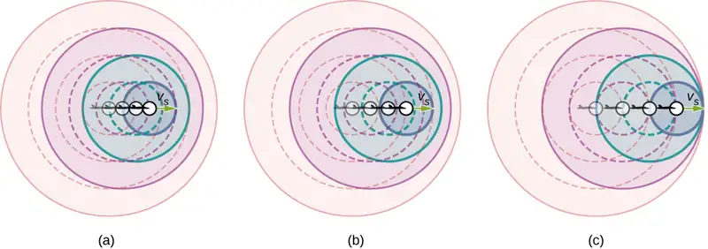
Now, as \(v_{\text{s}}\) approaches the speed of sound, \(f_{\text{o}}\) approaches infinity, because the denominator in \(f_{\text{o}}=f_{\text{s}}\left( \frac{v}{v\mp v_{\text{s}}} \right)\) approaches zero. At the speed of sound, this result means that in front of the source, each successive wave interferes with the previous one because the source moves forward at the speed of sound. The observer gets them all at the same instant, so the frequency is infinite [part (c) of the figure].
Shock Waves and Sonic Booms¶
If the source exceeds the speed of sound, no sound is received by the observer until the source has passed, so that the sounds from the approaching source are mixed with those from it when receding. This mixing appears messy, but something interesting happens—a shock wave is created (Figure 17.36).
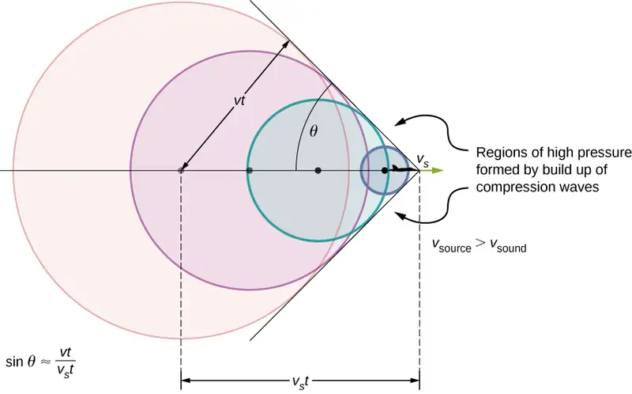
Constructive interference along the lines shown (a cone in three dimensions) from similar sound waves arriving there simultaneously. This superposition forms a disturbance called a shock wave, a constructive interference of sound created by an object moving faster than sound. Inside the cone, the interference is mostly destructive, so the sound intensity there is much less than on the shock wave. The angle of the shock wave can be found from the geometry. In time t the source has moved \(v_{\text{s}}t\) and the sound wave has moved a distance vt and the angle can be found using \(\sin\:\theta=\frac{vt}{v_{\text{s}}t}=\frac{v}{v_{\text{s}}}.\) Note that the Mach number is defined as \(\frac{v_{\text{s}}}{v}\) so the sine of the angle equals the inverse of the Mach number,
equation callout
You may have heard of the common term ‘sonic boom.’ A common misconception is that the sonic boom occurs as the plane breaks the sound barrier; that is, accelerates to a speed higher than the speed of sound. Actually, the sonic boom occurs as the shock wave sweeps along the ground.
An aircraft creates two shock waves, one from its nose and one from its tail (Figure 17.37). During television coverage of space shuttle landings, two distinct booms could often be heard. These were separated by exactly the time it would take the shuttle to pass by a point. Observers on the ground often do not see the aircraft creating the sonic boom, because it has passed by before the shock wave reaches them, as seen in the figure. If the aircraft flies close by at low altitude, pressures in the sonic boom can be destructive and break windows as well as rattle nerves. Because of how destructive sonic booms can be, researchers have developed experimental aircraft and components to reduce their impact. Many of these efforts were led by Christine Darden, a "human computer" who advanced to become the head of a NASA program dedicated to predicting and reducing sonic booms. From the 1960's until the late 1990's, Darden employed new materials, innovative designs, and advanced computer simulations. She led experiments involving panels placed on the aircraft that dispersed the shock waves. In recent years, these principles have been revisited and advanced, including in an experimental plane, the X-59, designed for quieter and more efficient flight.
Shock waves are one example of a broader phenomenon called bow wakes. A bow wake, such as the one in Figure 17.38, is created when the wave source moves faster than the wave propagation speed. Water waves spread out in circles from the point where created, and the bow wake is the familiar V-shaped wake, trailing the source. A more exotic bow wake is created when a subatomic particle travels through a medium faster than the speed of light travels in that medium. (In a vacuum, the maximum speed of light is \(c=3.00\:\times\:{10}^{8}\:\text{m/s;}\) in the medium of water, the speed of light is closer to 0.75c.) If the particle creates light in its passage, that light spreads on a cone with an angle indicative of the speed of the particle, as illustrated in Figure 17.39. Such a bow wake is called Cerenkov radiation and is commonly observed in particle physics.
Chapter Review¶
Key Terms¶
- beat frequency
- frequency of beats produced by sound waves that differ in frequency
- beats
- constructive and destructive interference of two or more frequencies of sound
- bow wake
- v-shaped disturbance created when the wave source moves faster than the wave propagation speed
- Doppler effect
- alteration in the observed frequency of a sound due to motion of either the source or the observer
- Doppler shift
- actual change in frequency due to relative motion of source and observer
- fundamental
- the lowest-frequency resonance
- harmonics
- the term used to refer collectively to the fundamental and its overtones
- hearing
- perception of sound
- loudness
- perception of sound intensity
- notes
- basic unit of music with specific names, combined to generate tunes
- overtones
- all resonant frequencies higher than the fundamental
- phon
- numerical unit of loudness
- pitch
- perception of the frequency of a sound
- shock wave
- wave front that is produced when a sound source moves faster than the speed of sound
- sonic boom
- loud noise that occurs as a shock wave as it sweeps along the ground
- sound
- traveling pressure wave that may be periodic; the wave can be modeled as a pressure wave or as an oscillation of molecules
- sound intensity level
- unitless quantity telling you the level of the sound relative to a fixed standard
- sound pressure level
- ratio of the pressure amplitude to a reference pressure
- timbre
- number and relative intensity of multiple sound frequencies
- transducer
- device that converts energy of a signal into measurable energy form, for example, a microphone converts sound waves into an electrical signal
Key Equations¶
| Pressure of a sound wave | \(\Delta P=\Delta P_{\max}\sin(kx\mp\omega t+\phi)\) |
| Displacement of the oscillating molecules of a sound wave |
\(s(x,t)=s_{\max}\cos(kx\mp\omega t+\phi)\) |
| Velocity of a wave | \(v=f\lambda\) |
| Speed of sound in a fluid | \(v=\sqrt{\frac{B}{\rho}}\) |
| Speed of sound in a solid | \(v=\sqrt{\frac{Y}{\rho}}\) |
| Speed of sound in an ideal gas | \(v=\sqrt{\frac{\gamma RT}{M}}\) |
| Speed of sound in air as a function of temperature | \(v=331\frac{\text{m}}{\text{s}}\sqrt{\frac{T_{\text{K}}}{273\:\text{K}}}=331\frac{\text{m}}{\text{s}}\sqrt{1+\frac{T_{\text{C}}}{273{}^{\circ}\text{C}}}\) |
| Decrease in intensity as a spherical wave expands | \(I_{2}=I_{1}{\left( \frac{r_{1}}{r_{2}} \right)}^{2}\) |
| Intensity averaged over a period | \(I=\frac{〈P〉}{A}\) |
| Intensity of sound | \(I=\frac{{(\Delta p_{\max})}^{2}}{2\rho v}\) |
| Sound intensity level | \(\beta(dB)=10\:\log_{10}\left( \frac{I}{I_{0}} \right)\) |
| Resonant wavelengths of a tube closed at one end | \(\lambda_{n}=\frac{4}{n}L,\;n=1,3,5\text{,…}\) |
| Resonant frequencies of a tube closed at one end | \(f_{n}=n\frac{v}{4L},\;n=1,3,5\text{,…}\) |
| Resonant wavelengths of a tube open at both ends | \(\lambda_{n}=\frac{2}{n}L,\;n=1,2,3\text{,…}\) |
| Resonant frequencies of a tube open at both ends | \(f_{n}=n\frac{v}{2L},\;n=1,2,3\text{,…}\) |
| Beat frequency produced by two waves that differ in frequency |
\(f_{\text{beat}}=|f_{2}-f_{1}|\) |
| Observed frequency for a stationary observer and a moving source |
\(f_{\text{o}}=f_{\text{s}}\left( \frac{v}{v\mp v_{\text{s}}} \right)\) |
| Observed frequency for a moving observer and a stationary source |
\(f_{\text{o}}=f_{\text{s}}\left( \frac{v\pm v_{\text{o}}}{v} \right)\) |
| Doppler shift for the observed frequency | \(f_{\text{o}}=f_{\text{s}}\left( \frac{v\pm v_{\text{o}}}{v\mp v_{\text{s}}} \right)\) |
| Mach number | \(M=\frac{v_{s}}{v}\) |
| Sine of angle formed by shock wave | \(\sin\:\theta=\frac{v}{v_{s}}=\frac{1}{M}\) |
Summary¶
17.1 Sound Waves¶
- Sound is a disturbance of matter (a pressure wave) that is transmitted from its source outward. Hearing is the perception of sound.
- Sound can be modeled in terms of pressure or in terms of displacement of molecules.
- The human ear is sensitive to frequencies between 20 Hz and 20 kHz.
17.2 Speed of Sound¶
- The speed of sound depends on the medium and the state of the medium.
- In a fluid, because the absence of shear forces, sound waves are longitudinal. A solid can support both longitudinal and transverse sound waves.
- In air, the speed of sound is related to air temperature T by\(v=\:331\frac{\text{m}}{\text{s}}\sqrt{\frac{T_{\text{K}}}{273\:\text{K}}}=331\frac{\text{m}}{\text{s}}\sqrt{1+\frac{T_{\text{C}}}{273{}^{\circ}\text{C}}}.\)
- v is the same for all frequencies and wavelengths of sound in air.
17.3 Sound Intensity¶
-
Intensity \(I=P\text{/}A\) is the same for a sound wave as was defined for all waves, where P is the power crossing area A. The SI unit for I is watts per meter squared. The intensity of a sound wave is also related to the pressure amplitude \(\Delta p\text{:}\)
\[ I=\frac{{(\Delta p)}^{2}}{2\:\rho v}, \]where \(\rho\) is the density of the medium in which the sound wave travels and \(v_{w}\) is the speed of sound in the medium.
-
Sound intensity level in units of decibels (dB) is
\[ \beta(\text{dB})=10\:\log_{10}\left( \frac{I}{I_{0}} \right), \]where \(I_{0}={10}^{-12}\:\text{W/m}^{2}\) is the threshold intensity of hearing.
-
The perception of frequency is pitch. The perception of intensity is loudness and loudness has units of phons.
17.4 Normal Modes of a Standing Sound Wave¶
- Unwanted sound can be reduced using destructive interference.
- Sound has the same properties of interference and resonance as defined for all waves.
- In air columns, the lowest-frequency resonance is called the fundamental, whereas all higher resonant frequencies are called overtones. Collectively, they are called harmonics.
17.5 Sources of Musical Sound¶
- Some musical instruments can be modeled as pipes that have symmetrical boundary conditions: open at both ends or closed at both ends. Other musical instruments can be modeled as pipes that have anti-symmetrical boundary conditions: closed at one end and open at the other.
- Some instruments, such as the pipe organ, have several tubes with different lengths. Instruments such as the flute vary the length of the tube by closing the holes along the tube. The trombone varies the length of the tube using a sliding bar.
- String instruments produce sound using a vibrating string with nodes at each end. The air around the string oscillates at the frequency of the string. The relationship for the frequencies for the string is the same as for the symmetrical boundary conditions of the pipe, with the length of the pipe replaced by the length of the string and the velocity replaced by \(v=\sqrt{\frac{F_{T}}{\mu}}.\)
17.6 Beats¶
- When two sound waves that differ in frequency interfere, beats are created with a beat frequency that is equal to the absolute value of the difference in the frequencies.
17.7 The Doppler Effect¶
- The Doppler effect is an alteration in the observed frequency of a sound due to motion of either the source or the observer.
- The actual change in frequency is called the Doppler shift.
17.8 Shock Waves¶
- The Mach number is the velocity of a source divided by the speed of sound, \(M=\frac{v_{\text{s}}}{v}.\)
- When a sound source moves faster than the speed of sound, a shock wave is produced as the sound waves interfere.
- A sonic boom is the intense sound that occurs as the shock wave moves along the ground.
- The angle the shock wave produces can be found as \(\sin\:\theta=\frac{v}{v_{\text{s}}}=\frac{1}{M}.\)
- A bow wake is produced when an object moves faster than the speed of a mechanical wave in the medium, such as a boat moving through the water.
Conceptual Questions¶
17.1 Sound Waves¶
1. What is the difference between sound and hearing?
Answer
Sound is a disturbance of matter (a pressure wave) that is transmitted from its source outward. Hearing is the human perception of sound.
2. You will learn that light is an electromagnetic wave that can travel through a vacuum. Can sound waves travel through a vacuum?
3. Sound waves can be modeled as a change in pressure. Why is the change in pressure used and not the actual pressure?
Answer
Consider a sound wave moving through air. The pressure of the air is the equilibrium condition, it is the change in pressure that produces the sound wave.
17.2 Speed of Sound¶
4. How do sound vibrations of atoms differ from thermal motion?
5. When sound passes from one medium to another where its propagation speed is different, does its frequency or wavelength change? Explain your answer briefly.
Answer
The frequency does not change as the sound wave moves from one medium to another. Since the speed changes and the frequency does not, the wavelength must change. This is similar to the driving force of a harmonic oscillator or a wave on the string.
6. A popular party trick is to inhale helium and speak in a high-frequency, funny voice. Explain this phenomenon.
7. You may have used a sonic range finder in lab to measure the distance of an object using a clicking sound from a sound transducer. What is the principle used in this device?
Answer
The transducer sends out a sound wave, which reflects off the object in question and measures the time it takes for the sound wave to return. Since the speed of sound is constant, the distance to the object can found by multiplying the velocity of sound by half the time interval measured.
8. The sonic range finder discussed in the preceding question often needs to be calibrated. During the calibration, the software asks for the room temperature. Why do you suppose the room temperature is required?
17.3 Sound Intensity¶
9. Six members of a synchronized swim team wear earplugs to protect themselves against water pressure at depths, but they can still hear the music and perform the combinations in the water perfectly. One day, they were asked to leave the pool so the dive team could practice a few dives, and they tried to practice on a mat, but seemed to have a lot more difficulty. Why might this be?
Answer
The ear plugs reduce the intensity of the sound both in water and on land, but Navy researchers have found that sound under water is heard through vibrations mastoid, which is the bone behind the ear.
10. A community is concerned about a plan to bring train service to their downtown from the town’s outskirts. The current sound intensity level, even though the rail yard is blocks away, is 70 dB downtown. The mayor assures the public that there will be a difference of only 30 dB in sound in the downtown area. Should the townspeople be concerned? Why?
17.4 Normal Modes of a Standing Sound Wave¶
11. You are given two wind instruments of identical length. One is open at both ends, whereas the other is closed at one end. Which is able to produce the lowest frequency?
Answer
The fundamental wavelength of a tube open at each end is 2L, where the wavelength of a tube open at one end and closed at one end is 4L. The tube open at one end has the lower fundamental frequency, assuming the speed of sound is the same in both tubes.
12. What is the difference between an overtone and a harmonic? Are all harmonics overtones? Are all overtones harmonics?
13. Two identical columns, open at both ends, are in separate rooms. In room A, the temperature is \(T=20{}^{\circ}\text{C}\) and in room B, the temperature is \(T=25{}^{\circ}\text{C}\). A speaker is attached to the end of each tube, causing the tubes to resonate at the fundamental frequency. Is the frequency the same for both tubes? Which has the higher frequency?
Answer
The wavelength in each is twice the length of the tube. The frequency depends on the wavelength and the speed of the sound waves. The frequency in room B is higher because the speed of sound is higher where the temperature is higher.
17.5 Sources of Musical Sound¶
14. How does an unamplified guitar produce sounds so much more intense than those of a plucked string held taut by a simple stick?
15. Consider three pipes of the same length (L). Pipe A is open at both ends, pipe B is closed at both ends, and pipe C has one open end and one closed end. If the velocity of sound is the same in each of the three tubes, in which of the tubes could the lowest fundamental frequency be produced? In which of the tubes could the highest fundamental frequency be produced?
Answer
When resonating at the fundamental frequency, the wavelength for pipe C is 4L, and for pipes A and B is 2L. The frequency is equal to \(f=v\text{/}\lambda.\) Pipe C has the lowest frequency and pipes A and B have equal frequencies, higher than the one in pipe C.
16. Pipe A has a length L and is open at both ends. Pipe B has a length L/2 and has one open end and one closed end. Assume the speed of sound to be the same in both tubes. Which of the harmonics in each tube would be equal?
17. A string is tied between two lab posts a distance L apart. The tension in the string and the linear mass density is such that the speed of a wave on the string is \(v=343\:\text{m/s}.\) A tube with symmetric boundary conditions has a length L and the speed of sound in the tube is \(v=343\:\text{m/s}.\) What could be said about the frequencies of the harmonics in the string and the tube? What if the velocity in the string were \(v=686\:\text{m/s}\)?
Answer
Since the boundary conditions are both symmetric, the frequencies are\(f_{n}=\frac{nv}{2L}.\) Since the speed is the same in each, the frequencies are the same. If the wave speed were doubled in the string, the frequencies in the string would be twice the frequencies in the tube.
17.6 Beats¶
18. Two speakers are attached to variable-frequency signal generator. Speaker A produces a constant-frequency sound wave of 1.00 kHz, and speaker B produces a tone of 1.10 kHz. The beat frequency is 0.10 kHz. If the frequency of each speaker is doubled, what is the beat frequency produced?
19. The label has been scratched off a tuning fork and you need to know its frequency. From its size, you suspect that it is somewhere around 250 Hz. You find a 250-Hz tuning fork and a 270-Hz tuning fork. When you strike the 250-Hz fork and the fork of unknown frequency, a beat frequency of 5 Hz is produced. When you strike the unknown with the 270-Hz fork, the beat frequency is 15 Hz. What is the unknown frequency? Could you have deduced the frequency using just the 250-Hz fork?
Answer
The frequency of the unknown fork is 255 Hz. No, if only the 250 Hz fork is used, listening to the beat frequency could only limit the possible frequencies to 245 Hz or 255 Hz.
20. Referring to the preceding question, if you had only the 250-Hz fork, could you come up with a solution to the problem of finding the unknown frequency?
21. A “showy” custom-built car has two brass horns that are supposed to produce the same frequency but actually emit 263.8 and 264.5 Hz. What beat frequency is produced?
Answer
The beat frequency is 0.7 Hz.
17.7 The Doppler Effect¶
22. Is the Doppler shift real or just a sensory illusion?
23. Three stationary observers observe the Doppler shift from a source moving at a constant velocity. The observers are stationed as shown below. Which observer will observe the highest frequency? Which observer will observe the lowest frequency? What can be said about the frequency observed by observer 3?
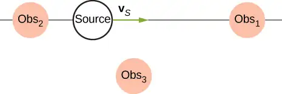
Answer
Observer 1 will observe the highest frequency. Observer 2 will observe the lowest frequency. Observer 3 will hear a higher frequency than the source frequency, but lower than the frequency observed by observer 1, as the source approaches and a lower frequency than the source frequency, but higher than the frequency observed by observer 1, as the source moves away from observer 3.
24. Shown below is a stationary source and moving observers. Describe the frequencies observed by the observers for this configuration.
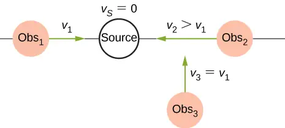
25. Prior to 1980, conventional radar was used by weather forecasters. In the 1960s, weather forecasters began to experiment with Doppler radar. What do you think is the advantage of using Doppler radar?
Answer
Doppler radar can not only detect the distance to a storm, but also the speed and direction at which the storm is traveling.
17.8 Shock Waves¶
26. What is the difference between a sonic boom and a shock wave?
27. Due to efficiency considerations related to its bow wake, the supersonic transport aircraft must maintain a cruising speed that is a constant ratio to the speed of sound (a constant Mach number). If the aircraft flies from warm air into colder air, should it increase or decrease its speed? Explain your answer.
Answer
The speed of sound decreases as the temperature decreases. The Mach number is equal to \(M=\frac{v_{\text{s}}}{v},\) so the plane should slow down.
28. When you hear a sonic boom, you often cannot see the plane that made it. Why is that?
Problems¶
17.1 Sound Waves¶
29. Consider a sound wave modeled with the equation\(s(x,t)=4.00\:\text{nm}\)
\(\cos(3.66\:\text{m}^{-1}\:x-1256\:\text{s}^{-1}t).\) What is the maximum displacement, the wavelength, the frequency, and the speed of the sound wave?
Answer
\(s_{\max}=4.00\:\text{nm},\;\lambda=1.72\:\text{m},\;f=200\:\text{Hz},\;v=343.17\:\text{m/s}\)
30. Consider a sound wave moving through the air modeled with the equation\(s(x,t)=6.00\:\text{nm}\)
\(\cos(54.93\:\text{m}^{-1}x-18.84\:\times\:{10}^{3}\:\text{s}^{-1}t).\) What is the shortest time required for an air molecule to move between 3.00 nm and –3.00 nm?
31. Consider a diagnostic ultrasound of frequency 5.00 MHz that is used to examine an irregularity in soft tissue. (a) What is the wavelength in air of such a sound wave if the speed of sound is 343 m/s? (b) If the speed of sound in tissue is 1800 m/s, what is the wavelength of this wave in tissue?
Answer
a. \(\lambda=68.60\:\mu\text{m;}\) b. \(\lambda=360.00\:\mu\text{m}\)
32. A sound wave is modeled as \(\Delta P=1.80\:\text{Pa}\:\sin(55.41\:\text{m}^{-1}\:x-18,840\:\text{s}^{-1}t).\) What is the maximum change in pressure, the wavelength, the frequency, and the speed of the sound wave?
33. A sound wave is modeled with the wave function \(\Delta P=1.20\:\text{Pa}\:\sin(kx-6.28\:\times\:{10}^{4}\text{s}^{-1}t)\) and the sound wave travels in air at a speed of \(v=343.00\:\text{m/s}.\) (a) What is the wave number of the sound wave? (b) What is the value for \(\Delta P(3.00\:\text{m},20.00\:\text{s})\)?
Answer
a. \(k=183.09\text{m}^{-1};\)
b. \(\Delta P=-1.11\:\text{Pa}\)
34. The displacement of the air molecules in sound wave is modeled with the wave function \(s(x,t)=5.00\:\text{nm}\)
\(\cos(91.54\:\text{m}^{-1}x-3.14\:\times\:{10}^{4}\:\text{s}^{-1}t)\). (a) What is the wave speed of the sound wave? (b) What is the maximum speed of the air molecules as they oscillate in simple harmonic motion? (c) What is the magnitude of the maximum acceleration of the air molecules as they oscillate in simple harmonic motion?
35. A speaker is placed at the opening of a long horizontal tube. The speaker oscillates at a frequency f, creating a sound wave that moves down the tube. The wave moves through the tube at a speed of \(v=340.00\:\text{m/s}.\) The sound wave is modeled with the wave function \(s(x,t)=s_{\max}\cos(kx-\omega t+\phi).\) At time \(t=0.00\:\text{s}\), an air molecule at \(x=3.5\:\text{m}\) is at the maximum displacement of 7.00 nm. At the same time, another molecule at \(x=3.7\:\text{m}\) has a displacement of 3.00 nm. What is the frequency at which the speaker is oscillating?
Answer
\(\begin{array}{c} s_{1}=7.00\:\text{nm,}\;s_{2}=3.00\:\text{nm,}\;kx_{1}+\phi=0\:\text{rad} \\ kx_{2}+\phi=1.128\:\text{rad} \\ k(x_{2}-x_{1})=1.128\:\text{rad,}\;k=5.64\:\text{m}^{-1} \\ \lambda=1.11\:\text{m,}\;f=306.31\:\text{Hz} \end{array}\)
36. A 250-Hz tuning fork is struck and begins to vibrate. A sound-level meter is located 34.00 m away. It takes the sound \(\Delta t=0.10\:\text{s}\) to reach the meter. The maximum displacement of the tuning fork is 1.00 mm. Write a wave function for the sound.
37. A sound wave produced by an ultrasonic transducer, moving in air, is modeled with the wave equation \(s(x,t)=4.50\:\text{nm}\:\cos(9.15\:\times\:{10}^{4}\:\text{m}^{-1}x-\)
\(2\pi(5.00\:\text{MHz})t).\) The transducer is to be used in nondestructive testing to test for fractures in steel beams. The speed of sound in the steel beam is \(v=5950\:\text{m/s}.\) Find the wave function for the sound wave in the steel beam.
Answer
\(\begin{array}{c} k=5.28\:\times\:{10}^{3}\text{m} \\ s(x,t)=4.50\:\text{nm}\:\cos(5.28\:\times\:{10}^{3}\:\text{m}^{-1}x-2\pi(5.00\:\text{MHz})t) \end{array}\)
38. Porpoises emit sound waves that they use for navigation. If the wavelength of the sound wave emitted is 4.5 cm, and the speed of sound in the water is \(v=1530\:\text{m/s,}\) what is the period of the sound?
39. Bats use sound waves to catch insects. Bats can detect frequencies up to 100 kHz. If the sound waves travel through air at a speed of \(v=343\:\text{m/s,}\) what is the wavelength of the sound waves?
Answer
\(\lambda=3.43\:\text{mm}\)
40. A bat sends of a sound wave 100 kHz and the sound waves travel through air at a speed of \(v=343\:\text{m/s}.\) (a) If the maximum pressure difference is 1.30 Pa, what is a wave function that would model the sound wave, assuming the wave is sinusoidal? (Assume the phase shift is zero.) (b) What are the period and wavelength of the sound wave?
41. Consider the graph shown below of a compression wave. Shown are snapshots of the wave function for \(t=0.000\:\text{s}\) (blue) and \(t=0.005\:\text{s}\) (orange). What are the wavelength, maximum displacement, velocity, and period of the compression wave?
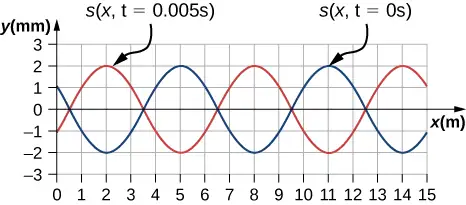
Answer
\(\begin{array}{c} \lambda=6.00\:\text{m} \\ \\ s_{\max}=2.00\:\text{mm} \\ \\ v=600\:\text{m/s} \\ \\ T=0.01\:\text{s} \end{array}\)
42. Consider the graph in the preceding problem of a compression wave. Shown are snapshots of the wave function for \(t=0.000\:\text{s}\) (blue) and \(t=0.005\:\text{s}\) (orange). Given that the displacement of the molecule at time \(t=0.00\:\text{s}\) and position \(x=0.00\:\text{m}\) is \(s(0.00\:\text{m},0.00\:\text{s})=1.08\:\text{mm,}\) derive a wave function to model the compression wave.
43. A guitar string oscillates at a frequency of 100 Hz and produces a sound wave. (a) What do you think the frequency of the sound wave is that the vibrating string produces? (b) If the speed of the sound wave is
\(v=343\:\text{m/s,}\) what is the wavelength of the sound wave?
Answer
(a) \(f=100\:\text{Hz,}\) (b) \(\lambda=3.43\:\text{m}\)
17.2 Speed of Sound¶
44. When poked by a spear, an operatic soprano lets out a 1200-Hz shriek. What is its wavelength if the speed of sound is 345 m/s?
45. What frequency sound has a 0.10-m wavelength when the speed of sound is 340 m/s?
Answer
\(f=3400\:\text{Hz}\)
46. Calculate the speed of sound on a day when a 1500-Hz frequency has a wavelength of 0.221 m.
47. (a) What is the speed of sound in a medium where a 100-kHz frequency produces a 5.96-cm wavelength? (b) Which substance in Table 17.1 is this likely to be?
Answer
a. \(v=5.96\:\times\:{10}^{3}\:\text{m/s}\); b. steel (from value in Table 17.1)
48. Show that the speed of sound in \(20.0{}^{\circ}\text{C}\) air is \(343\:\text{m/s},\) as claimed in the text.
49. Air temperature in the Sahara Desert can reach \(56.0{}^{\circ}\text{C}\) (about \(134{}^{\circ}\text{F}\)). What is the speed of sound in air at that temperature?
Answer
\(v=363\:\frac{\text{m}}{\text{s}}\)
50. Dolphins make sounds in air and water. What is the ratio of the wavelength of a sound in air to its wavelength in seawater? Assume air temperature is \(20.0{}^{\circ}\text{C}.\)
51. A sonar echo returns to a submarine 1.20 s after being emitted. What is the distance to the object creating the echo? (Assume that the submarine is in the ocean, not in fresh water.)
Answer
\(\Delta x=924\:\text{m}\)
52. (a) If a submarine’s sonar can measure echo times with a precision of 0.0100 s, what is the smallest difference in distances it can detect? (Assume that the submarine is in the ocean, not in fresh water.) (b) Discuss the limits this time resolution imposes on the ability of the sonar system to detect the size and shape of the object creating the echo.
53. Ultrasonic sound waves are often used in methods of nondestructive testing. For example, this method can be used to find structural faults in a steel I-beams used in building. Consider a 10.00 meter long, steel I-beam with a cross-section shown below. The weight of the I-beam is 3846.50 N. What would be the speed of sound through in the I-beam? \((Y_{\text{steel}}=200\:\text{GPa},\beta_{\text{steel}}=159\:\text{GPa})\).
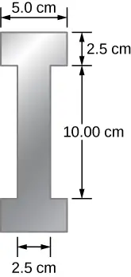
Answer
\(\begin{array}{c} V=0.05\:\text{m}^{3} \\ m=392.5\:\text{kg} \\ \rho=7850\:\text{kg/m}^{3} \\ v=5047.54\:\text{m/s} \end{array}\)
54. A physicist at a fireworks display times the lag between seeing an explosion and hearing its sound, and finds it to be 0.400 s. (a) How far away is the explosion if air temperature is \(24.0{}^{\circ}\text{C}\) and if you neglect the time taken for light to reach the physicist? (b) Calculate the distance to the explosion taking the speed of light into account. Note that this distance is negligibly greater.
55. During a 4th of July celebration, an M80 firework explodes on the ground, producing a bright flash and a loud bang. The air temperature of the night air is \(T_{\text{F}}=95.00{}^{\circ}\text{F}.\) Two observers see the flash and hear the bang. The first observer notes the time between the flash and the bang as 0.10 second. The second observer notes the difference as 0.15 seconds. The line of sight between the two observers meet at a right angle as shown below. What is the distance \(\Delta x\) between the two observers?
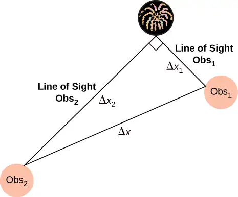
Answer
\(\begin{array}{c} T_{\text{C}}=35{}^{\circ}\text{C,}\;v=351.58\:\text{m/s} \\ \Delta x_{1}=35.16\:\text{m,}\;\Delta x_{2}=52.74\:\text{m} \\ \Delta x=63.39\:\text{m} \end{array}\)
56. The density of a sample of water is \(\rho=998.00\:\text{kg/m}^{3}\) and the bulk modulus is \(\beta=2.15\:\text{GPa}.\) What is the speed of sound through the sample?
57. Suppose a bat uses sound echoes to locate its insect prey, 3.00 m away. (See Figure 17.6.) (a) Calculate the echo times for temperatures of \(5.00{}^{\circ}\text{C}\) and \(35.0{}^{\circ}\text{C}.\) (b) What percent uncertainty does this cause for the bat in locating the insect? (c) Discuss the significance of this uncertainty and whether it could cause difficulties for the bat. (In practice, the bat continues to use sound as it closes in, eliminating most of any difficulties imposed by this and other effects, such as motion of the prey.)
Answer
a. \(t_{5.00{}^{\circ}\text{C}}=0.0180\:\text{s},\;t_{35.0{}^{\circ}\text{C}}=0.0171\:\text{s}\); b. \(\text{\% uncertainty}=5.00\text{\%}\); c. This uncertainty could definitely cause difficulties for the bat, if it didn’t continue to use sound as it closed in on its prey. A 5% uncertainty could be the difference between catching the prey around the neck or around the chest, which means that it could miss grabbing its prey.
17.3 Sound Intensity¶
58. What is the intensity in watts per meter squared of a 85.0-dB sound?
59. The warning tag on a lawn mower states that it produces noise at a level of 91.0 dB. What is the intensity of this sound in watts per meter squared?
Answer
\(1.26\:\times\:{10}^{-3}\:\text{W/m}^{2}\)
60. A sound wave traveling in air has a pressure amplitude of 0.5 Pa. What is the intensity of the wave?
61. What intensity level does the sound in the preceding problem correspond to?
Answer
85 dB
62. What sound intensity level in dB is produced by earphones that create an intensity of \(4.00\:\times\:{10}^{-2}\:\text{W/m}^{2}\)?
63. What is the decibel level of a sound that is twice as intense as a 90.0-dB sound? (b) What is the decibel level of a sound that is one-fifth as intense as a 90.0-dB sound?
Answer
a. 93 dB; b. 83 dB
64. What is the intensity of a sound that has a level 7.00 dB lower than a \(4.00\:\times\:{10}^{-9}\text{-W/m}^{2}\) sound? (b) What is the intensity of a sound that is 3.00 dB higher than a \(4.00\:\times\:{10}^{-9}\text{-W/m}^{2}\) sound?
65. People with good hearing can perceive sounds as low as −8.00 dB at a frequency of 3000 Hz. What is the intensity of this sound in watts per meter squared?
Answer
\(1.58\:\times\:{10}^{-13}\:\text{W/m}^{2}\)
66. If a large housefly 3.0 m away from you makes a noise of 40.0 dB, what is the noise level of 1000 flies at that distance, assuming interference has a negligible effect?
67. Ten cars in a circle at a boom box competition produce a 120-dB sound intensity level at the center of the circle. What is the average sound intensity level produced there by each stereo, assuming interference effects can be neglected?
Answer
A decrease of a factor of 10 in intensity corresponds to a reduction of 10 dB in sound level: \(120\:\text{dB}-10\:\text{dB}=110\:\text{dB}.\)
68. The amplitude of a sound wave is measured in terms of its maximum gauge pressure. By what factor does the amplitude of a sound wave increase if the sound intensity level goes up by 40.0 dB?
69. If a sound intensity level of 0 dB at 1000 Hz corresponds to a maximum gauge pressure (sound amplitude) of \({10}^{-9}\:\text{atm}\), what is the maximum gauge pressure in a 60-dB sound? What is the maximum gauge pressure in a 120-dB sound?
Answer
We know that 60 dB corresponds to a factor of \({10}^{6}\) increase in intensity. Therefore,
\(I\propto X^{2}\Rightarrow\frac{I_{2}}{I_{1}}={\left( \frac{X_{2}}{X_{1}} \right)}^{2}{,}\:\text{so that}\:X_{2}={10}^{-6}\:\text{atm}.\)
120 dB corresponds to a factor of \({10}^{12}\) increase\(\Rightarrow{10}^{-9}\:\text{atm}{({10}^{12})}^{\text{1/2}}={10}^{-3}\:\text{atm}.\)
70. An 8-hour exposure to a sound intensity level of 90.0 dB may cause hearing damage. What energy in joules falls on a 0.800-cm-diameter eardrum so exposed?
71. Sound is more effectively transmitted into a stethoscope by direct contact rather than through the air, and it is further intensified by being concentrated on the smaller area of the eardrum. It is reasonable to assume that sound is transmitted into a stethoscope 100 times as effectively compared with transmission though the air. What, then, is the gain in decibels produced by a stethoscope that has a sound gathering area of \(15.0\:\text{cm}^{2}\), and concentrates the sound onto two eardrums with a total area of \(0.900\:\text{cm}^{2}\) with an efficiency of \(40.0\text{\%}\)?
Answer
28.2 dB
72. Loudspeakers can produce intense sounds with surprisingly small energy input in spite of their low efficiencies. Calculate the power input needed to produce a 90.0-dB sound intensity level for a 12.0-cm-diameter speaker that has an efficiency of \(1.00\text{\%}\). (This value is the sound intensity level right at the speaker.)
73. The factor of 10-12 in the range of intensities to which the ear can respond, from threshold to that causing damage after brief exposure, is truly remarkable. If you could measure distances over the same range with a single instrument and the smallest distance you could measure was 1 mm, what would the largest be?
Answer
\(1\:\times\:{10}^{6}\:\text{km}\)
74. What are the closest frequencies to 500 Hz that an average person can clearly distinguish as being different in frequency from 500 Hz? The sounds are not present simultaneously.
75. Can you tell that your roommate turned up the sound on the TV if its average sound intensity level goes from 70 to 73 dB?
Answer
\(73\:\text{dB}-70\:\text{dB}=3\:\text{dB};\) Such a change in sound level is easily noticed.
76. If a woman needs an amplification of \(5.0\:\:\times\:{10}^{5}\) times the threshold intensity to enable her to hear at all frequencies, what is her overall hearing loss in dB? Note that smaller amplification is appropriate for more intense sounds to avoid further damage to her hearing from levels above 90 dB.
77. A person has a hearing threshold 10 dB above normal at 100 Hz and 50 dB above normal at 4000 Hz. How much more intense must a 100-Hz tone be than a 4000-Hz tone if they are both barely audible to this person?
Answer
2.5; The 100-Hz tone must be 2.5 times more intense than the 4000-Hz sound to be audible by this person.
17.4 Normal Modes of a Standing Sound Wave¶
78. (a) What is the fundamental frequency of a 0.672-m-long tube, open at both ends, on a day when the speed of sound is 344 m/s? (b) What is the frequency of its second harmonic?
79. What is the length of a tube that has a fundamental frequency of 176 Hz and a first overtone of 352 Hz if the speed of sound is 343 m/s?
Answer
0.974 m
80. The ear canal resonates like a tube closed at one end. (See Figure 17.14.) If ear canals range in length from 1.80 to 2.60 cm in an average population, what is the range of fundamental resonant frequencies? Take air temperature to be \(37.0{}^{\circ}\text{C,}\) which is the same as body temperature.
81. Calculate the first overtone in an ear canal, which resonates like a 2.40-cm-long tube closed at one end, by taking air temperature to be \(37.0{}^{\circ}\text{C}\). Is the ear particularly sensitive to such a frequency? (The resonances of the ear canal are complicated by its nonuniform shape, which we shall ignore.)
Answer
11.0 kHz; The ear is not particularly sensitive to this frequency, so we don’t hear overtones due to the ear canal.
82. A crude approximation of voice production is to consider the breathing passages and mouth to be a resonating tube closed at one end. (a) What is the fundamental frequency if the tube is 0.240 m long, by taking air temperature to be \(37.0{}^{\circ}\text{C}\)? (b) What would this frequency become if the person replaced the air with helium? Assume the same temperature dependence for helium as for air.
83. A 4.0-m-long pipe, open at one end and closed at one end, is in a room where the temperature is \(T=22{}^{\circ}\text{C}.\) A speaker capable of producing variable frequencies is placed at the open end and is used to cause the tube to resonate. (a) What is the wavelength and the frequency of the fundamental frequency? (b) What is the frequency and wavelength of the first overtone?
Answer
a. \(v=344.08\:\text{m/s,}\;\lambda_{1}=16.00\:\text{m,}\;f_{1}=21.51\:\text{Hz;}\)
b. \(\lambda_{3}=5.33\:\text{m,}\;f_{3}=64.56\:\text{Hz}\)
84. A 4.0-m-long pipe, open at both ends, is placed in a room where the temperature is\(T=25{}^{\circ}\text{C}.\) A speaker capable of producing variable frequencies is placed at the open end and is used to cause the tube to resonate. (a) What are the wavelength and the frequency of the fundamental frequency? (b) What are the frequency and wavelength of the first overtone?
85. A nylon guitar string is fixed between two lab posts 2.00 m apart. The string has a linear mass density of \(\mu=7.20\:\text{g/m}\) and is placed under a tension of 160.00 N. The string is placed next to a tube, open at both ends, of length L. The string is plucked and resonates at the fundamental frequency while the tube resonates at the \(n=3\) mode. The speed of sound is 343 m/s. What is the length of the tube?
Answer
\(\begin{array}{c} v_{\text{string}}=149.07\:\text{m/s,}\;\lambda_{1}=4.00\:\text{m,}\;f_{1}=37.3\:\text{Hz} \\ \lambda_{1}=\frac{v}{f_{1}},\;L=13.8\:\text{m} \end{array}\)
86. A 512-Hz tuning fork is struck and placed next to a tube with a movable piston, creating a tube with a variable length. The piston is slid down the pipe and resonance is reached when the piston is 115.50 cm from the open end. The next resonance is reached when the piston is 82.50 cm from the open end. (a) What is the speed of sound in the tube? (b) How far from the open end will the piston cause the next mode of resonance?
87. Students in a physics lab are asked to find the length of an air column. They obtain a long tube that is closed at one end that has a fundamental frequency of 256 Hz. They hold the tube vertically and fill it with water to the top, then lower the water while a 256-Hz tuning fork is rung and listen for the first resonance. (a) What is the air temperature if the resonance occurs for a length of 0.336 m? (b) At what length will they observe the second resonance (first overtone)?
Answer
a. \(22.0\text{°C}\); b. 1.01 m
17.5 Sources of Musical Sound¶
88. If a wind instrument, such as a tuba, has a fundamental frequency of 32.0 Hz, what are its first three overtones? It is closed at one end. (The overtones of a real tuba are more complex than this example, because it is a tapered tube.)
89. What are the first three overtones of a bassoon that has a fundamental frequency of 90.0 Hz? It is open at both ends. (The overtones of a real bassoon are more complex than this example, because its double reed makes it act more like a tube closed at one end.)
Answer
\(\begin{array}{c} \text{first overtone}=180\:\text{Hz;} \\ \text{second overtone}=270\:\text{Hz;} \\ \text{third overtone}=360\:\text{Hz} \end{array}\)
90. How long must a flute be in order to have a fundamental frequency of 262 Hz (this frequency corresponds to middle C on the evenly tempered chromatic scale) on a day when air temperature is \(20.0{}^{\circ}\text{C}\)? It is open at both ends.
91. What length should an oboe have to produce a fundamental frequency of 110 Hz on a day when the speed of sound is 343 m/s? It is open at both ends.
Answer
1.56 m
92. (a) Find the length of an organ pipe closed at one end that produces a fundamental frequency of 256 Hz when air temperature is \(18.0{}^{\circ}\text{C}\). (b) What is its fundamental frequency at \(25.0{}^{\circ}\text{C}\)?
93. An organ pipe \((L=3.00\:\text{m})\) is closed at both ends. Compute the wavelengths and frequencies of the first three modes of resonance. Assume the speed of sound is\(v=343.00\:\text{m/s}.\)
Answer
The pipe has symmetrical boundary conditions;
\(\begin{array}{c} \lambda_{n}=\frac{2}{n}L,\;f_{n}=\frac{nv}{2L},\;n=1,2,3 \\ \lambda_{1}=6.00\:\text{m},\;\lambda_{2}=3.00\:\text{m},\;\lambda_{3}=2.00\:\text{m} \\ f_{1}=57.17\:\text{Hz},\;f_{2}=114.33\:\text{Hz},\;f_{3}=171.50\:\text{Hz} \end{array}\)
94. An organ pipe \((L=3.00\:\text{m})\) is closed at one end. Compute the wavelengths and frequencies of the first three modes of resonance. Assume the speed of sound is\(v=343.00\:\text{m/s}.\)
95. A sound wave of a frequency of 2.00 kHz is produced by a string oscillating in the \(n=6\) mode. The linear mass density of the string is \(\mu=0.0065\:\text{kg/m}\) and the length of the string is 1.50 m. What is the tension in the string?
Answer
\(\begin{array}{c} \lambda_{6}=0.5\:\text{m} \\ v=1000\:\text{m/s} \\ F_{T}=6500\:\text{N} \end{array}\)
96. Consider the sound created by resonating the tube shown below. The air temperature is \(T_{\text{C}}=30.00{}^{\circ}\text{C}\). What are the wavelength, wave speed, and frequency of the sound produced?
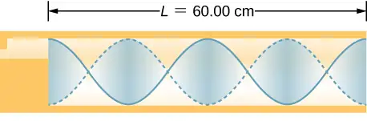
97. A student holds an 80.00-cm lab pole one quarter of the length from the end of the pole. The lab pole is made of aluminum. The student strikes the lab pole with a hammer. The pole resonates at the lowest possible frequency. What is that frequency?
Answer
\(f=6.40\:\text{kHz}\)
98. A string on the violin has a length of 24.00 cm and a mass of 0.860 g. The fundamental frequency of the string is 1.00 kHz. (a) What is the speed of the wave on the string? (b) What is the tension in the string?
99. By what fraction will the frequencies produced by a wind instrument change when air temperature goes from \(10.0{}^{\circ}\text{C}\) to \(30.0{}^{\circ}\text{C}\)? That is, find the ratio of the frequencies at those temperatures.
Answer
1.03 or \(3\text{\%}\)
17.6 Beats¶
100. What beat frequencies are present: (a) If the musical notes A and C are played together (frequencies of 220 and 264 Hz)? (b) If D and F are played together (frequencies of 297 and 352 Hz)? (c) If all four are played together?
101. What beat frequencies result if a piano hammer hits three strings that emit frequencies of 127.8, 128.1, and 128.3 Hz?
Answer
\(\begin{array}{ccc} f_{\text{B}} & = & |f_{1}-f_{2}| \\ |128.3\:\text{Hz}-128.1\:\text{Hz}| & = & 0.2\:\text{Hz;} \\ |128.3\:\text{Hz}-127.8\:\text{Hz}| & = & 0.5\:\text{Hz;} \\ |128.1\:\text{Hz}-127.8\:\text{Hz}| & = & 0.3\:\text{Hz} \end{array}\)
102. A piano tuner hears a beat every 2.00 s when listening to a 264.0-Hz tuning fork and a single piano string. What are the two possible frequencies of the string?
103. Two identical strings, of identical lengths of 2.00 m and linear mass density of \(\mu=0.0065\:\text{kg/m,}\) are fixed on both ends. String A is under a tension of 120.00 N. String B is under a tension of 130.00 N. They are each plucked and produce sound at the \(n=10\) mode. What is the beat frequency?
Answer
\(\begin{array}{c} v_{A}=135.87\:\text{m/s,}\;v_{B}=141.42\:\text{m/s,} \\ \lambda_{A}=\lambda_{B}=0.40\:\text{m} \\ \Delta f=13.9\:\text{Hz} \end{array}\)
104. A piano tuner uses a 512-Hz tuning fork to tune a piano. He strikes the fork and hits a key on the piano and hears a beat frequency of 5 Hz. He tightens the string of the piano, and repeats the procedure. Once again he hears a beat frequency of 5 Hz. What happened?
105. A string with a linear mass density of \(\mu=0.0062\:\text{kg/m}\) is stretched between two posts 1.30 m apart. The tension in the string is 150.00 N. The string oscillates and produces a sound wave. A 1024-Hz tuning fork is struck and the beat frequency between the two sources is 52.83 Hz. What are the possible frequency and wavelength of the wave on the string?
Answer
\(\begin{array}{c} v=155.54\:\text{m/s,} \\ f_{\text{string}}=971.17\:\text{Hz,}\;n=16.23 \\ f_{\text{string}}=1076.83\:\text{Hz,}\;n=18.00 \end{array}\)
The frequency is 1076.83 Hz and the wavelength is 0.14 m.
106. A car has two horns, one emitting a frequency of 199 Hz and the other emitting a frequency of 203 Hz. What beat frequency do they produce?
107. The middle C hammer of a piano hits two strings, producing beats of 1.50 Hz. One of the strings is tuned to 260.00 Hz. What frequencies could the other string have?
Answer
\(\begin{array}{c} f_{2}=f_{1}\pm f_{\text{B}}=260.00\:\text{Hz}\pm 1.50\:\text{Hz,} \\ \text{so that}\:f_{2}=261.50\:\text{Hz}\:\text{or}\:f_{2}=258.50\:\text{Hz} \end{array}\)
108. Two tuning forks having frequencies of 460 and 464 Hz are struck simultaneously. What average frequency will you hear, and what will the beat frequency be?
109. Twin jet engines on an airplane are producing an average sound frequency of 4100 Hz with a beat frequency of 0.500 Hz. What are their individual frequencies?
Answer
\(\begin{array}{c} f_{\text{ace}}=\frac{f_{1}+f_{2}}{2};f_{\text{B}}=f_{1}-f_{2}(\text{assume}f_{1} \gt f_{2}) \\ f_{\text{ace}}=\frac{(f_{\text{B}}+f_{2})+f_{2}}{2}\Rightarrow \\ f_{2}=4099.750\:\text{Hz} \\ f_{1}=4100.250\:\text{Hz} \end{array}\)
110. Three adjacent keys on a piano (F, F-sharp, and G) are struck simultaneously, producing frequencies of 349, 370, and 392 Hz. What beat frequencies are produced by this discordant combination?
17.7 The Doppler Effect¶
111. (a) What frequency is received by a person watching an oncoming ambulance moving at 110 km/h and emitting a steady 800-Hz sound from its siren? The speed of sound on this day is 345 m/s. (b) What frequency does she receive after the ambulance has passed?
Answer
a. 878 Hz; b. 735 Hz
112. (a) At an air show a jet flies directly toward the stands at a speed of 1200 km/h, emitting a frequency of 3500 Hz, on a day when the speed of sound is 342 m/s. What frequency is received by the observers? (b) What frequency do they receive as the plane flies directly away from them?
113. What frequency is received by a mouse just before being dispatched by a hawk flying at it at 25.0 m/s and emitting a screech of frequency 3500 Hz? Take the speed of sound to be 331 m/s.
Answer
\(3.79\:\times\:{10}^{3}\:\text{Hz}\)
114. A spectator at a parade receives an 888-Hz tone from an oncoming trumpeter who is playing an 880-Hz note. At what speed is the musician approaching if the speed of sound is 338 m/s?
115. A commuter train blows its 200-Hz horn as it approaches a crossing. The speed of sound is 335 m/s. (a) An observer waiting at the crossing receives a frequency of 208 Hz. What is the speed of the train? (b) What frequency does the observer receive as the train moves away?
Answer
a. 12.9 m/s; b. 193 Hz
116. Can you perceive the shift in frequency produced when you pull a tuning fork toward you at 10.0 m/s on a day when the speed of sound is 344 m/s? To answer this question, calculate the factor by which the frequency shifts and see if it is greater than 0.300%.
117. Two eagles fly directly toward one another, the first at 15.0 m/s and the second at 20.0 m/s. Both screech, the first one emitting a frequency of 3200 Hz and the second one emitting a frequency of 3800 Hz. What frequencies do they receive if the speed of sound is 330 m/s?
Answer
The first eagle hears \(4.23\:\times\:{10}^{3}\:\text{Hz}.\) The second eagle hears \(3.56\:\times\:{10}^{3}\:\text{Hz}.\)
118. Student A runs down the hallway of the school at a speed of \(v_{\text{o}}=5.00\:\text{m/s,}\) carrying a ringing 1024.00-Hz tuning fork toward a concrete wall. The speed of sound is \(v=343.00\:\text{m/s}.\) Student B stands at rest at the wall. (a) What is the frequency heard by student B? (b) What is the beat frequency heard by student A?
119. An ambulance with a siren \((f=1.00\text{kHz})\) blaring is approaching an accident scene. The ambulance is moving at 70.00 mph. A nurse is approaching the scene from the opposite direction, running at \(v_{o}=7.00\:\text{m/s}.\) What frequency does the nurse observe? Assume the speed of sound is \(v=343.00\:\text{m/s}.\)
Answer
\(\begin{array}{c} v_{\text{s}}=31.29\:\text{m/s} \\ f_{\text{o}}=1.12\:\text{kHz} \end{array}\)
120. The frequency of the siren of an ambulance is 900 Hz and is approaching you. You are standing on a corner and observe a frequency of 960 Hz. What is the speed of the ambulance (in mph) if the speed of sound is \(v=340.00\:\text{m/s?}\)
121. What is the minimum speed at which a source must travel toward you for you to be able to hear that its frequency is Doppler shifted? That is, what speed produces a shift of \(0.300\text{\%}\) on a day when the speed of sound is 331 m/s?
Answer
An audible shift occurs when \(\frac{f_{\text{obs}}}{f_{\text{s}}}\ge 1.003\); \(\begin{array}{c} f_{\text{obs}}=f_{\text{s}}\frac{v}{v-v_{\text{s}}}\Rightarrow\frac{f_{\text{obs}}}{f_{\text{s}}}=\frac{v}{v-v_{\text{s}}}\Rightarrow \\ v_{\text{s}}=0.990\:\text{m/s} \end{array}\)
17.8 Shock Waves¶
122. An airplane is flying at Mach 1.50 at an altitude of 7500.00 meters, where the speed of sound is \(v=343.00\:\text{m/s}.\) How far away from a stationary observer will the plane be when the observer hears the sonic boom?
123. A jet flying at an altitude of 8.50 km has a speed of Mach 2.00, where the speed of sound is \(v=340.00\:\text{m/s}.\) How long after the jet is directly overhead, will a stationary observer hear a sonic boom?
Answer
\(\begin{array}{c} \theta=30.02{}^{\circ} \\ v_{\text{s}}=680.00\:\text{m/s} \\ \tan\:\theta=\frac{y}{v_{\text{s}}t},\;t=21.65\:\text{s} \end{array}\)
124. The shock wave off the front of a fighter jet has an angle of \(\theta=70.00{}^{\circ}\). The jet is flying at 1200 km/h. What is the speed of sound?
125. A plane is flying at Mach 1.2, and an observer on the ground hears the sonic boom 15.00 seconds after the plane is directly overhead. What is the altitude of the plane? Assume the speed of sound is \(v_{\text{w}}=343.00\:\text{m/s}.\)
Answer
\(\begin{array}{c} \sin\:\theta=\frac{1}{M},\;\theta=56.47{}^{\circ} \\ y=9.31\:\text{km} \end{array}\)
126. A bullet is fired and moves at a speed of 1342 mph. Assume the speed of sound is \(v=340.00\:\text{m/s}.\) What is the angle of the shock wave produced?
127. A speaker is placed at the opening of a long horizontal tube. The speaker oscillates at a frequency of f, creating a sound wave that moves down the tube. The wave moves through the tube at a speed of \(v=340.00\:\text{m/s}.\) The sound wave is modeled with the wave function \(s(x,t)=s_{\max}\cos(kx-\omega t+\phi)\). At time \(t=0.00\:\text{s}\), an air molecule at \(x=2.3\:\text{m}\) is at the maximum displacement of 6.34 nm. At the same time, another molecule at \(x=2.7\:\text{m}\) has a displacement of 2.30 nm. What is the wave function of the sound wave, that is, find the wave number, angular frequency, and the initial phase shift?
Answer
\(\begin{array}{c} s_{1}=6.34\:\text{nm} \\ s_{2}=2.30\:\text{nm} \\ kx_{1}+\phi=0\:\text{rad} \\ kx_{2}+\phi=1.20\:\text{rad} \\ k(x_{2}-x_{1})=1.20\:\text{rad} \\ k=3.00\:\text{m}^{-1} \\ \omega=1019.62\:\text{s}^{-1} \\ s_{1}=s_{\max}\cos(kx_{1}-\phi) \\ \phi=5.66\:\text{rad} \\ s(x,t)=6.30\:\text{nm}\cos(3.00\:\text{m}^{-1}x-1019.62\:\text{s}^{-1}t+5.66) \end{array}\)
128. An airplane moves at Mach 1.2 and produces a shock wave. (a) What is the speed of the plane in meters per second? (b) What is the angle that the shock wave moves?
Additional Problems¶
129. A 0.80-m-long tube is opened at both ends. The air temperature is \(26{}^{\circ}\text{C}.\) The air in the tube is oscillated using a speaker attached to a signal generator. What are the wavelengths and frequencies of first two modes of sound waves that resonate in the tube?
Answer
\(v_{\text{s}}=346.40\:\text{m/s}\);
\(\begin{array}{c} \lambda_{n}=\frac{2}{n}L\;\;\;f_{n}=\frac{v_{\text{s}}}{\lambda_{n}} \\ \lambda_{1}=1.60\:\text{m}\;\;f_{1}=216.50\:\text{Hz} \\ \lambda_{2}=0.80\:\text{m}\;\;f_{1}=433.00\:\text{Hz} \end{array}\)
130. A tube filled with water has a valve at the bottom to allow the water to flow out of the tube. As the water is emptied from the tube, the length L of the air column changes. A 1024-Hz tuning fork is placed at the opening of the tube. Water is removed from the tube until the \(n=5\) mode of a sound wave resonates. What is the length of the air column if the temperature of the air in the room is \(18{}^{\circ}\text{C?}\)
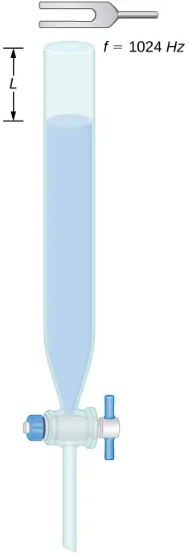
131. Consider the following figure. The length of the string between the string vibrator and the pulley is \(L=1.00\:\text{m}.\) The linear density of the string is \(\mu=0.006\:\text{kg/m}.\) The string vibrator can oscillate at any frequency. The hanging mass is 2.00 kg. (a)What are the wavelength and frequency of \(n=6\) mode? (b) The string oscillates the air around the string. What is the wavelength of the sound if the speed of the sound is \(v_{s}=343.00\:\text{m/s}\)?
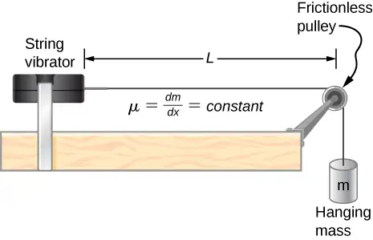
Answer
a. \(\begin{array}{c} \lambda_{6}=0.40\:\text{m} \\ \\ \\ v=57.15\frac{\text{m}}{\text{s}} \\ f_{6}=142.89\:\text{Hz} \end{array}\); b. \(\lambda_{\text{s}}=2.40\:\text{m}\)
132. Early Doppler shift experiments were conducted using a band playing music on a train. A trumpet player on a moving railroad flatcar plays a 320-Hz note. The sound waves heard by a stationary observer on a train platform hears a frequency of 350 Hz. What is the flatcar’s speed in mph? The temperature of the air is \(T_{\text{C}}=22{}^{\circ}\text{C}\).
133. Two cars move toward one another, both sounding their horns \((f_{s}=800\:\text{Hz})\). Car A is moving at 65 mph and Car B is at 75 mph. What is the beat frequency heard by each driver? The air temperature is \(T_{C}=22.00{}^{\circ}\text{C}\).
Answer
\(\begin{array}{c} v=344.08\frac{\text{m}}{\text{s}} \\ v_{A}=29.05\frac{\text{m}}{\text{s}},\;v_{B}=33.52\:\text{m/s} \\ f_{A}=961.18\:\text{Hz,}\; \\ f_{B}=958.89\:\text{Hz} \\ f_{A,\text{beat}}=161.18\:\text{Hz,}\;f_{B,\text{beat}}=158.89\:\text{Hz} \end{array}\)
134. Student A runs after Student B. Student A carries a tuning fork ringing at 1024 Hz, and student B carries a tuning fork ringing at 1000 Hz. Student A is running at a speed of \(v_{A}=5.00\:\text{m/s}\) and Student B is running at \(v_{B}=6.00\:\text{m/s}.\) What is the beat frequency heard by each student? The speed of sound is \(v=343.00\:\text{m/s}.\)
135. Suppose that the sound level from a source is 75 dB and then drops to 52 dB, with a frequency of 600 Hz. Determine the (a) initial and (b) final sound intensities and the (c) initial and (d) final sound wave amplitudes. The air temperature is \(T_{\text{C}}=24.00{}^{\circ}\text{C}\) and the air density is \(\rho=1.184\:\text{kg/m}^{3}.\)
Answer
\(v=345.24\frac{\text{m}}{\text{s}}\); a. \(I=31.62\frac{\text{μW}}{\text{m}^{2}}\); b. \(I=0.16\frac{\text{μW}}{\text{m}^{2}}\); c. \(s_{\max}=104.39\:\text{μm}\); d. \(s_{\max}=7.43\:\text{μm}\)
136. The Doppler shift for a Doppler radar is found by \(f=f_{R}\left( \frac{1+\frac{v}{c}}{1-\frac{v}{c}} \right)\), where \(f_{R}\) is the frequency of the radar, f is the frequency observed by the radar, c is the speed of light, and v is the speed of the target. What is the beat frequency observed at the radar, assuming the speed of the target is much slower than the speed of light?
137. A stationary observer hears a frequency of 1000.00 Hz as a source approaches and a frequency of 850.00 Hz as a source departs. The source moves at a constant velocity of 75 mph. What is the temperature of the air?
Answer
\(\begin{array}{c} \frac{f_{A}}{f_{D}}=\frac{v+v_{\text{s}}}{v-v_{\text{s}}},\;(v-v_{\text{s}})\frac{f_{A}}{f_{D}}=v+v_{\text{s}},\;v=347.39\frac{\text{m}}{\text{s}} \\ T_{\text{C}}=27.70{}^{\circ} \end{array}\)
138. A flute plays a note with a frequency of 600 Hz. The flute can be modeled as a pipe open at both ends, where the flute player changes the length with his finger positions. What is the length of the tube if this is the fundamental frequency?
Challenge Problems¶
139. Two sound speakers are separated by a distance d, each sounding a frequency f. An observer stands at one speaker and walks in a straight line a distance x, perpendicular to the the two speakers, until he comes to the first maximum intensity of sound. The speed of sound is v. How far is he from the speaker? Assume the distance, d, between the slits is larger than the wavelength of the sound.
Answer
\(\begin{array}{c} \sqrt{x^{2}+d^{2}}-x=\lambda,\;x^{2}+d^{2}={(\lambda+x)}^{2} \\ \\ \\ x^{2}+d^{2}=\lambda^{2}+2x\lambda+x^{2},\;d^{2}=\lambda^{2}+2x\lambda \\ \\ \\ \\ \\ x=\frac{d^{2}-{\left( \frac{v}{f} \right)}^{2}}{2\frac{v}{f}} \end{array}\)
140. Consider the beats shown below. This is a graph of the gauge pressure versus time for the position \(x=0.00\:\text{m}.\) The wave moves with a speed of \(v=343.00\:\text{m/s}.\) (a) How many beats are there per second? (b) How many times does the wave oscillate per second? (c) Write a wave function for the gauge pressure as a function of time.
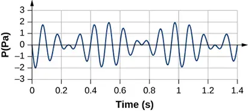
141. Two speakers producing the same frequency of sound are a distance of d apart. Consider an arc along a circle of radius R, centered at the midpoint of the speakers, as shown below. (a) At what angles will there be maxima? (b) At what angle will there be minima?
![Picture shows a triangle with two sides of r1 and 2. The height of a triangle is 6 meters. The altitude to the base of the triangle splits the base into two parts that are 2 meters and 3 meters long. Picture is a drawing of two speakers placed at a distance d apart. The sound waves produced by the speakers meet at the point r1 from the top speaker and r2 from the bottom one. R is the distance from the point located equidistantly between the speakers to the to point where there the waves meet. Line R forms angle theta with the line perpendicular to the line connecting two speakers.](img/cnx-uphysics-17-08-chalprob-3-img.webp)
Answer
a. For maxima \(\begin{array}{c} \Delta r=d\:\sin\:\theta \\ d\:\sin\:\theta=n\lambda\;n=0,\pm 1,\pm 2....,\;\theta=\sin^{-1}\left( n\frac{\lambda}{d} \right)\;n=0,\pm 1,\pm 2.... \end{array}\)
b. For minima, \(\begin{array}{c} \Delta r=d\:\sin\:\theta \\ d\:\sin\:\theta=\left( n+\frac{1}{2} \right)\lambda\;n=0,\pm 1,\pm 2.... \\ \theta=\sin^{-1}\left( \left( n+\frac{1}{2} \right)\frac{\lambda}{d} \right)\;n=0,\pm 1,\pm 2.... \end{array}\)
142. A string has a length of 1.5 m, a linear mass density \(\mu=0.008\:\text{kg/m,}\), and a tension of 120 N. If the air temperature is \(T=22{}^{\circ}\text{C,}\) what should the length of a pipe open at both ends for it to have the same frequency for the \(n=3\) mode?
143. A string \(\left( \mu=0.006\frac{\text{kg}}{\text{m}},L=1.50\:\text{m} \right)\) is fixed at both ends and is under a tension of 155 N. It oscillates in the \(n=10\) mode and produces sound. A tuning fork is ringing nearby, producing a beat frequency of 23.76 Hz. (a) What is the frequency of the sound from the string? (b) What is the frequency of the tuning fork if the tuning fork frequency is lower? (c) What should be the tension of the string for the beat frequency to be zero?
Answer
a. \(v_{\text{string}}=160.73\frac{\text{m}}{\text{s}},\;f_{\text{string}}=535.77\:\text{Hz}\); b. \(f_{\text{fork}}=512\:\text{Hz}\); c. \(f_{\text{fork}}=\frac{n\sqrt{\frac{F_{T}}{\mu}}}{2L},\;F_{T}=141.56\:\text{N}\)
144. A string has a linear mass density \(\mu\), a length L, and a tension of \(F_{T}\), and oscillates in a mode n at a frequency f. Find the ratio of \(\frac{\Delta f}{f}\) for a small change in tension.
145. A string has a linear mass density \(\mu=0.007\:\text{kg/m,}\) a length \(L=0.70\:\text{m,}\) a tension of \(F_{T}=110\:\text{N},\) and oscillates in a mode \(n=3\). (a) What is the frequency of the oscillations? (b) Use the result in the preceding problem to find the change in the frequency when the tension is increased by \(1.00\text{\%}\).
Answer
a. \(f=268.62\:\text{Hz}\); b. \(\Delta f\approx\frac{1}{2}\:\frac{\Delta F_{T}}{F_{T}}f=1.34\:\text{Hz}\)
146. A speaker powered by a signal generator is used to study resonance in a tube. The signal generator can be adjusted from a frequency of 1000 Hz to 1800 Hz. First, a 0.75-m-long tube, open at both ends, is studied. The temperature in the room is \(T_{\text{F}}=85.00{}^{\circ}\text{F}.\) (a) Which normal modes of the pipe can be studied? What are the frequencies and wavelengths? Next a cap is place on one end of the 0.75-meter-long pipe. (b) Which normal modes of the pipe can be studied? What are the frequencies and wavelengths?
147. A string on the violin has a length of 23.00 cm and a mass of 0.900 grams. The tension in the string 850.00 N. The temperature in the room is \(T_{C}=24.00{}^{\circ}\text{C}.\) The string is plucked and oscillates in the \(n=9\) mode. (a) What is the speed of the wave on the string? (b) What is the wavelength of the sounding wave produced? (c) What is the frequency of the oscillating string? (d) What is the frequency of the sound produced? (e) What is the wavelength of the sound produced?
Answer
a. \(v=466.07\frac{\text{m}}{\text{s}}\); b. \(\lambda_{9}=51.11\:\text{mm}\); c. \(f_{9}=9.12\:\text{kHz}\);
d. \(f_{\text{sound}}=9.12\:\text{kHz}\); e. \(\lambda_{\text{air}}=37.86\:\text{mm}\)
Adapted from University Physics Volume 1 by OpenStax, licensed under CC BY 4.0. Access the original for free at openstax.org. Changes: converted to the web reading format of The Open Book Project.
-
Several government agencies and health-related professional associations recommend that 85 dB not be exceeded for 8-hour daily exposures in the absence of hearing protection. ↩